SPEAQeasy: a Scalable Pipeline for Expression Analysis and Quantification, a demonstration of its usage on real data
Daianna Gonzalez-Padilla
Lieber Institute for Brain Developmentglezdaianna@gmail.com
Renee Garcia-Flores
Lieber Institute for Brain Developmentrenee.garciaflores@gmail.com
Nicholas J. Eagles
Lieber Institute for Brain Developmentnick.eagles@libd.org
Leonardo Collado-Torres
Lieber Institute for Brain DevelopmentCenter for Computational Biology, Johns Hopkins Universitylcolladotor@gmail.com
24 July 2023
SPEAQeasyWorkshop2023.RmdOverview
This workshop aims to present the SPEAQeasy (Eagles,
Burke, Leonard, Barry, Stolz, Huuki, Phan, Serrato, Gutiérrez-Millán,
Aguilar-Ordoñez, Jaffe, and Collado-Torres, 2021) RNA-seq processing
pipeline, demonstrating how its outputs can be used in Differential
Expression Analyses (DEA) and the type of results it enables to obtain
using other Bioconductor R packages such as limma and
edgeR.
Description
In this demo, participants will be able to understand what the
SPEAQeasy pipeline does and what it returns through a differential
expression analysis performed on a dataset from the
smokingMouse (Gonzalez-Padilla and Collado-Torres, 2023)
Bioconductor package, which contains gene expression data and sample
information from multiple RNA-sequencing experiments in mice.
Pre-requisites
- General familiarity with bulk RNA-seq data.
- Basic knowledge of differential expression.
- Basic experience handling SummarizedExperiment and GenomicRanges packages.
- Previous review of http://research.libd.org/smokingMouse/ for data explanation. (Optional)
Participation
Participants are expected to follow us on the theoretical explanations and presentation of the code logic, but are not really expected to run code since some analyses take plenty of time. An active participation and opportune interventions are always welcome and enriching for the discussion.
Workshop
Workshop goals and objectives
Learning goals
The global goals of this workshop are:
- to understand the purpose of SPEAQeasy and the type of data it produces;
- to learn what type of analyses can be done with SPEAQeasy outputs;
- to understand techniques used to filter and normalize gene-expression data;
- to learn of quality control analyses and other type of exploratory data analyses;
- to understand how to identify suitable covariates for differential expression analyses;
- to learn how to perform a differential expression analysis and how to visualize expression of DEGs.
Learning objectives
As specific objectives we have:
- to use ggplot2 to assess bulk RNA-seq quality metrics for the smokingMouse dataset stored in SummarizedExperiment objects output by the SPEAQeasy pipeline;
- use variancePartition to perform a Canonical Correlation Analysis (CCA) on gene-expression data with associated quality metrics;
- to use limma
functions such as
voom(),lmFit(),eBayes()andtopTable()to find DEGs. - to use ComplexHeatmap to create heatmaps of expression levels of DEGs, identifying clusters of up and down regulated genes.
SPEAQeasy overview
We introduce SPEAQeasy, a Scalable RNA-seq processing Pipeline for Expression Analysis and Quantification, that is easy to install, use, and share with others. More detailed documentation is here.

SPEAQeasy starts with raw sequencing outputs in FASTQ format and ultimately produces RangedSummarizedExperiment objects with raw and normalized counts for each feature type: genes, exons, exon-exon junctions, and transcripts.
For human samples, variant calling is performed at a list of highly variable sites. A single VCF file is generated, containing genotype calls for all samples. This establishes a sufficiently unique profile for each sample which can be compared against pre-sequencing genotype calls to resolve potential identity issues.
Optionally, BigWig coverage files by strand, and averaged across strands, are produced. An additional step utilizes the derfinder package to compute expressed regions, a precursor to analyses finding differentially expressed regions (DERs).
Installation and set-up
SPEAQeasy is available from GitHub, and can be cloned:
SPEAQeasy dependencies are recommended to be installed using Docker or Singularity, involving a fairly quick installation that is reproducible regardless of the computing environment. We’ll install using Singularity, which is more frequently available in high-performance computing (HPC) environments:
If neither Docker nor Singularity are available, a more experimental local installation of all dependencies is an option:
Please note that installation may take some time– installing and running SPEAQeasy is not required for this workshop, but is demonstrated to familiarize participants with the process. The workshop files include outputs from SPEAQeasy, which can be used later for the example differential expression analysis.
Choose a “main” script as appropriate for your particular set-up. “Main” scripts and associated configuration files exist for SLURM-managed computing clusters, SGE-managed clusters, local machines, and the JHPCE cluster.
| Environment | “Main” script | Config file |
|---|---|---|
| SLURM cluster | run_pipeline_slurm.sh | conf/slurm.config or conf/docker_slurm.config |
| SGE cluster | run_pipeline_sge.sh | conf/sge.config or conf/docker_sge.config |
| Local machine | run_pipeline_local.sh | conf/local.config or conf/docker_local.config |
| JHPCE cluster | run_pipeline_jhpce.sh | conf/jhpce.config |
Within the main script, you can configure arguments specific to the experiment, such as the reference organism, pairing of samples, and where to place output files, among other specifications.
When running SPEAQeasy on a cluster (i.e. SLURM, SGE, or JHPCE users), it is recommended you submit the pipeline as a job, using the command appropriate for your cluster. For those running SPEAQeasy locally, the main script can be executed directly, ideally as a background task.
# SLURM-managed clusters
sbatch run_pipeline_slurm.sh
# SGE-managed clusters
qsub run_pipeline_sge.sh
# local machines
bash run_pipeline_local.sh
# The JHPCE cluster
qsub run_pipeline_jhpce.shHere’s an example of such a file:
example_main_script <- system.file(
"extdata", "SPEAQeasy-example", "run_pipeline_jhpce.sh",
package = "SPEAQeasyWorkshop2023"
)
cat(paste0(readLines(example_main_script), "\n"))
#> #!/bin/bash
#> #$ -l mem_free=40G,h_vmem=40G,h_fsize=800G
#> #$ -o ../../processed-data/01_SPEAQeasy/SPEAQeasy_output.log
#> #$ -e ../../processed-data/01_SPEAQeasy/SPEAQeasy_output.log
#> #$ -cwd
#>
#> # Get absolute path to git repo
#> base_dir=$(git rev-parse --show-toplevel)
#>
#> nextflow SPEAQeasy/main.nf \
#> --sample "paired" \
#> --reference "mm10" \
#> --strand "reverse" \
#> --ercc \
#> --experiment "smoking_mouse" \
#> --annotation "/dcl01/lieber/ajaffe/Nick/SPEAQeasy/Annotation" \
#> -with-report "${base_dir}/processed-data/01_SPEAQeasy/execution_reports/JHPCE_run.html" \
#> -w "${base_dir}/processed-data/01_SPEAQeasy/work" \
#> --input "${base_dir}/processed-data/01_SPEAQeasy" \
#> --output "${base_dir}/processed-data/01_SPEAQeasy/pipeline_output" \
#> -profile jhpceData overview and download
The dataset that will be used for the DEA can be downloaded from the
smokingMouse package. We will download the
rse_gene object which contains the data at the gene level.
Visit here for more
details of this package.

Figure 1: Experimental design of the study. The data was obtained from an experiment in which A) 6 pregnant dams and 17 non-pregnant female adult mice were administered nicotine by intraperitoneal injection (IP; n=12) or controls (n=11). A total of 42 pups were born to pregnant dams: 19 were born to mice that were administered nicotine and 23 to control mice. Samples from frontal cortices of P0 pups and adults were obtained. B) RNA was extracted from those samples and then RNA-seq libraries were prepared and sequenced to obtain the expression counts of the genes. At the end, a dataset of 65 samples (either from adult or pup brain) and 55,401 genes was generated.
The data reside in a RangedSummarizedExperiment (RSE)
object, containing the following assays:
-
counts: original read counts of the 55,401 mouse genes across 208 samples (including the 65 nicotine samples). -
logcounts: normalized and scaled counts (\(log_2(CPM + 0.5)\)) of the same genes across the same samples; normalization was carried out applying TMM method withcpm(calcNormFactors())of edgeR.
The same RSE contains the sample information in
colData(RSE) and the gene information in
rowData(RSE).
Yellow variables correspond to SPEAQeasy outputs that are going to be used in downstream analyses.
Pink variables are specific to the study, such as sample metadata and some others containing additional information about the genes.
Blue variables are
quality-control metrics computed by addPerCellQC() of
scuttle.
Gene Information
Among the information in rowData(RSE) the next variables
are of interest for the analysis:
- gencodeID : GENCODE ID of each gene.
- ensemblID : gene ID in Ensembl database.
- EntrezID : identifier of each gene in NCBI Entrez database.
- Symbol : official gene symbol for each mouse gene.
-
retained_after_feature_filtering
: Boolean variable that equals TRUE if the gene passed the gene
filtering (with
filterByExpr()of edgeR) based on its expression levels and FALSE if not.
Sample Information
Sample information in colData(RSE) contains the
following variables:
- SAMPLE_ID : is the name of the sample.
- ERCCsumLogErr : a summary statistic quantifying overall difference of expected and actual ERCC concentrations for one sample.
- overallMapRate : the decimal fraction of reads which successfully mapped to the reference genome (i.e. numMapped / numReads).
- mitoMapped : the number of reads which successfully mapped to the mitochondrial chromosome.
- totalMapped : the number of reads which successfully mapped to the canonical sequences in the reference genome (excluding mitochondrial chromosomes).
- mitoRate : the decimal fraction of reads which mapped to the mitochondrial chromosome, of those which map at all (i.e. mitoMapped / (totalMapped + mitoMapped))
-
totalAssignedGene : the
decimal fraction of reads assigned unambiguously to a gene (including
mitochondrial genes), with
featureCounts(Liao et al. 2014), of those in total. - rRNA_rate : the decimal fraction of reads assigned to a gene whose type is ‘rRNA’, of those assigned to any gene.
- Tissue : tissue (mouse brain or blood) from which the sample comes.
- Age : if the sample comes from an adult or a pup mouse.
- Sex : if the sample comes from a female (F) or male (M) mouse.
- Expt : the experiment (nicotine or smoking exposure) to which the sample mouse was subjected; it could be an exposed or a control mouse of that experiment.
- Group : if the sample belongs to a nicotine/smoking-exposed mouse (Expt) or a nicotine/smoking control mouse (Ctrl).
- plate : is the plate (1,2 or 3) in which the sample library was prepared.
- Pregnancy : if the sample comes from a pregnant (Yes) or not pregnant (No) mouse.
- medium : is the medium in which the sample was treated: water for brain samples and an elution buffer (EB) for the blood ones.
- flowcell : is the sequencing batch of each sample.
- sum : library size (total sum of counts across all genes for each sample).
- detected : number of non-zero expressed genes in each sample.
Note: in our case, we’ll use samples from the nicotine experiment only, so all samples come from brain and were treated in water.
library(SummarizedExperiment)
#> Loading required package: MatrixGenerics
#> Loading required package: matrixStats
#>
#> Attaching package: 'MatrixGenerics'
#> The following objects are masked from 'package:matrixStats':
#>
#> colAlls, colAnyNAs, colAnys, colAvgsPerRowSet, colCollapse,
#> colCounts, colCummaxs, colCummins, colCumprods, colCumsums,
#> colDiffs, colIQRDiffs, colIQRs, colLogSumExps, colMadDiffs,
#> colMads, colMaxs, colMeans2, colMedians, colMins, colOrderStats,
#> colProds, colQuantiles, colRanges, colRanks, colSdDiffs, colSds,
#> colSums2, colTabulates, colVarDiffs, colVars, colWeightedMads,
#> colWeightedMeans, colWeightedMedians, colWeightedSds,
#> colWeightedVars, rowAlls, rowAnyNAs, rowAnys, rowAvgsPerColSet,
#> rowCollapse, rowCounts, rowCummaxs, rowCummins, rowCumprods,
#> rowCumsums, rowDiffs, rowIQRDiffs, rowIQRs, rowLogSumExps,
#> rowMadDiffs, rowMads, rowMaxs, rowMeans2, rowMedians, rowMins,
#> rowOrderStats, rowProds, rowQuantiles, rowRanges, rowRanks,
#> rowSdDiffs, rowSds, rowSums2, rowTabulates, rowVarDiffs, rowVars,
#> rowWeightedMads, rowWeightedMeans, rowWeightedMedians,
#> rowWeightedSds, rowWeightedVars
#> Loading required package: GenomicRanges
#> Loading required package: stats4
#> Loading required package: BiocGenerics
#>
#> Attaching package: 'BiocGenerics'
#> The following objects are masked from 'package:stats':
#>
#> IQR, mad, sd, var, xtabs
#> The following objects are masked from 'package:base':
#>
#> anyDuplicated, aperm, append, as.data.frame, basename, cbind,
#> colnames, dirname, do.call, duplicated, eval, evalq, Filter, Find,
#> get, grep, grepl, intersect, is.unsorted, lapply, Map, mapply,
#> match, mget, order, paste, pmax, pmax.int, pmin, pmin.int,
#> Position, rank, rbind, Reduce, rownames, sapply, setdiff, sort,
#> table, tapply, union, unique, unsplit, which.max, which.min
#> Loading required package: S4Vectors
#>
#> Attaching package: 'S4Vectors'
#> The following object is masked from 'package:utils':
#>
#> findMatches
#> The following objects are masked from 'package:base':
#>
#> expand.grid, I, unname
#> Loading required package: IRanges
#> Loading required package: GenomeInfoDb
#> Loading required package: Biobase
#> Welcome to Bioconductor
#>
#> Vignettes contain introductory material; view with
#> 'browseVignettes()'. To cite Bioconductor, see
#> 'citation("Biobase")', and for packages 'citation("pkgname")'.
#>
#> Attaching package: 'Biobase'
#> The following object is masked from 'package:MatrixGenerics':
#>
#> rowMedians
#> The following objects are masked from 'package:matrixStats':
#>
#> anyMissing, rowMedians
## Connect to ExperimentHub
library(ExperimentHub)
#> Loading required package: AnnotationHub
#> Loading required package: BiocFileCache
#> Loading required package: dbplyr
#>
#> Attaching package: 'AnnotationHub'
#> The following object is masked from 'package:Biobase':
#>
#> cache
eh <- ExperimentHub::ExperimentHub()
################################
# Retrieve data
################################
## Load the datasets of the package
myfiles <- query(eh, "smokingMouse")
## Download the mouse gene data
rse_gene <- myfiles[["EH8313"]]
#> see ?smokingMouse and browseVignettes('smokingMouse') for documentation
#> loading from cache
## This is a RangedSummarizedExperiment object
rse_gene
#> class: RangedSummarizedExperiment
#> dim: 55401 208
#> metadata(1): Obtained_from
#> assays(2): counts logcounts
#> rownames(55401): ENSMUSG00000102693.1 ENSMUSG00000064842.1 ...
#> ENSMUSG00000064371.1 ENSMUSG00000064372.1
#> rowData names(13): Length gencodeID ... DE_in_pup_brain_nicotine
#> DE_in_pup_brain_smoking
#> colnames: NULL
#> colData names(71): SAMPLE_ID FQCbasicStats ...
#> retained_after_QC_sample_filtering
#> retained_after_manual_sample_filtering
## Check sample info
colData(rse_gene)[1:5, 1:5]
#> DataFrame with 5 rows and 5 columns
#> SAMPLE_ID FQCbasicStats perBaseQual perTileQual perSeqQual
#> <character> <character> <character> <character> <character>
#> 1 Sample_2914 PASS PASS PASS PASS
#> 2 Sample_4042 PASS PASS PASS PASS
#> 3 Sample_4043 PASS PASS PASS PASS
#> 4 Sample_4044 PASS PASS PASS PASS
#> 5 Sample_4045 PASS PASS PASS PASS
## Check gene info
rowData(rse_gene)[1:5, 1:5]
#> DataFrame with 5 rows and 5 columns
#> Length gencodeID ensemblID
#> <integer> <character> <character>
#> ENSMUSG00000102693.1 1070 ENSMUSG00000102693.1 ENSMUSG00000102693
#> ENSMUSG00000064842.1 110 ENSMUSG00000064842.1 ENSMUSG00000064842
#> ENSMUSG00000051951.5 6094 ENSMUSG00000051951.5 ENSMUSG00000051951
#> ENSMUSG00000102851.1 480 ENSMUSG00000102851.1 ENSMUSG00000102851
#> ENSMUSG00000103377.1 2819 ENSMUSG00000103377.1 ENSMUSG00000103377
#> gene_type EntrezID
#> <character> <character>
#> ENSMUSG00000102693.1 TEC 71042
#> ENSMUSG00000064842.1 snRNA NA
#> ENSMUSG00000051951.5 protein_coding 497097
#> ENSMUSG00000102851.1 processed_pseudogene 100418032
#> ENSMUSG00000103377.1 TEC NA
## Access the original counts
original_counts <- assays(rse_gene)$counts
## Access the log normalized counts
logcounts <- assays(rse_gene)$logcounts
## Explore complete rse_gene object (including smoking-exposed samples as well)
rse_gene
#> class: RangedSummarizedExperiment
#> dim: 55401 208
#> metadata(1): Obtained_from
#> assays(2): counts logcounts
#> rownames(55401): ENSMUSG00000102693.1 ENSMUSG00000064842.1 ...
#> ENSMUSG00000064371.1 ENSMUSG00000064372.1
#> rowData names(13): Length gencodeID ... DE_in_pup_brain_nicotine
#> DE_in_pup_brain_smoking
#> colnames: NULL
#> colData names(71): SAMPLE_ID FQCbasicStats ...
#> retained_after_QC_sample_filtering
#> retained_after_manual_sample_filtering
#################################
## Extract data of interest
#################################
## Keep samples from nicotine experiment only
rse_gene_nic <- rse_gene[, which(rse_gene$Expt == "Nicotine")]
## New dimensions
dim(rse_gene_nic)
#> [1] 55401 65
#################################
## Access gene expression data
#################################
## Raw counts for first 3 genes in the first 5 samples
assays(rse_gene_nic)$counts[1:3, 1:5]
#> [,1] [,2] [,3] [,4] [,5]
#> ENSMUSG00000102693.1 0 0 0 0 0
#> ENSMUSG00000064842.1 0 0 0 0 0
#> ENSMUSG00000051951.5 811 710 812 1168 959
## Log-normalized counts for first 3 genes in the first 5 samples
assays(rse_gene_nic)$logcounts[1:3, 1:5]
#> [,1] [,2] [,3] [,4] [,5]
#> ENSMUSG00000102693.1 -5.985331 -5.985331 -5.985331 -5.985331 -5.985331
#> ENSMUSG00000064842.1 -5.985331 -5.985331 -5.985331 -5.985331 -5.985331
#> ENSMUSG00000051951.5 4.509114 4.865612 4.944597 4.684371 4.813427
#################################
## Access sample data
#################################
## Info for the first 2 samples
head(colData(rse_gene_nic), 2)
#> DataFrame with 2 rows and 71 columns
#> SAMPLE_ID FQCbasicStats perBaseQual perTileQual perSeqQual perBaseContent
#> <character> <character> <character> <character> <character> <character>
#> 1 Sample_2914 PASS PASS PASS PASS FAIL/WARN
#> 2 Sample_4042 PASS PASS PASS PASS FAIL/WARN
#> GCcontent Ncontent SeqLengthDist SeqDuplication OverrepSeqs
#> <character> <character> <character> <character> <character>
#> 1 WARN PASS WARN FAIL PASS
#> 2 WARN PASS WARN FAIL PASS
#> AdapterContent KmerContent SeqLength_R1 percentGC_R1 phred15-19_R1
#> <character> <character> <character> <character> <character>
#> 1 PASS NA 75-151 49 37.0
#> 2 PASS NA 75-151 48 37.0
#> phred65-69_R1 phred115-119_R1 phred150-151_R1 phredGT30_R1 phredGT35_R1
#> <character> <character> <character> <numeric> <numeric>
#> 1 37.0 37.0 37.0 NA NA
#> 2 37.0 37.0 37.0 NA NA
#> Adapter65-69_R1 Adapter100-104_R1 Adapter140_R1 SeqLength_R2 percentGC_R2
#> <numeric> <numeric> <numeric> <character> <character>
#> 1 0.000108294 0.00026089 0.00174971 75-151 49
#> 2 0.000210067 0.00035278 0.00154716 75-151 48
#> phred15-19_R2 phred65-69_R2 phred115-119_R2 phred150-151_R2 phredGT30_R2
#> <character> <character> <character> <character> <numeric>
#> 1 37.0 37.0 37.0 37.0 NA
#> 2 37.0 37.0 37.0 37.0 NA
#> phredGT35_R2 Adapter65-69_R2 Adapter100-104_R2 Adapter140_R2 ERCCsumLogErr
#> <numeric> <numeric> <numeric> <numeric> <numeric>
#> 1 NA 0.000276104 0.000486875 0.00132235 -58.2056
#> 2 NA 0.000326771 0.000574851 0.00137044 -81.6359
#> bamFile trimmed numReads numMapped numUnmapped
#> <character> <logical> <numeric> <numeric> <numeric>
#> 1 Sample_2914_sorted.bam FALSE 89386472 87621022 1765450
#> 2 Sample_4042_sorted.bam FALSE 59980794 58967812 1012982
#> overallMapRate concordMapRate totalMapped mitoMapped mitoRate
#> <numeric> <numeric> <numeric> <numeric> <numeric>
#> 1 0.9802 0.9748 87143087 10039739 0.103308
#> 2 0.9831 0.9709 58215746 7453208 0.113497
#> totalAssignedGene rRNA_rate Tissue Age Sex Expt
#> <numeric> <numeric> <character> <character> <character> <character>
#> 1 0.761378 0.00396315 Brain Adult F Nicotine
#> 2 0.754444 0.00301119 Brain Adult F Nicotine
#> Group Pregnant plate location concentration medium
#> <character> <character> <character> <character> <character> <character>
#> 1 Experimental 0 Plate2 C12 165.9 Water
#> 2 Control 0 Plate1 B4 122.6 Water
#> date Pregnancy flowcell sum detected subsets_Mito_sum
#> <character> <character> <character> <numeric> <numeric> <numeric>
#> 1 NA No HKCMHDSXX 37119948 24435 2649559
#> 2 NA No HKCG7DSXX 24904754 23656 1913803
#> subsets_Mito_detected subsets_Mito_percent subsets_Ribo_sum
#> <numeric> <numeric> <numeric>
#> 1 26 7.13783 486678
#> 2 31 7.68449 319445
#> subsets_Ribo_detected subsets_Ribo_percent retained_after_QC_sample_filtering
#> <numeric> <numeric> <logical>
#> 1 11 1.31110 TRUE
#> 2 13 1.28267 TRUE
#> retained_after_manual_sample_filtering
#> <logical>
#> 1 TRUE
#> 2 TRUEDifferential Expression Analysis
In this workshop we’ll guide you through a differential expression analysis following the steps presented in Figure 2. The main objective is to determine which genes are affected by nicotine administration (in adults) or exposure (in pups) in the mouse brain.

1. Data preparation
Before exploring a dataset, normalization and filtering steps are generally appropriate. In our case, SPEAQeasy outputs contain normalized counts, and the example data we’ll use already has non-expressed genes filtered out.
1.1 Data normalization
Data normalization is a preliminary step when working with expression data because raw counts do not necessarily reflect real expression measures of the genes, since there are technical differences in the way the libraries are prepared and sequenced, as well as intrinsic differences in the genes that are translated into more or less mapped reads. Particularly, there are within-sample effects that are the differences between genes in the same sample, such as their length (the longer the gene, the more reads it will have) and GC content, factors that contribute to variations in their counts. On the other hand, between-sample effects are differences between samples such as the sequencing depth, i.e., the total number of molecules sequenced, and the library size, i.e., the total number of reads of each sample [1].
These variables lead to significantly different mRNA amounts but of
course are not due to the biological or treatment conditions of interest
(such as nicotine administration in this example) so in order to remove,
or at least, to minimize this technical bias and obtain measures
comparable and consistent across samples, raw counts must be normalized
by these factors. The data that we’ll use in this case are already
normalized in assays(rse_gene)$logcounts. Specifically, the
assay contains counts per million (CPM), also known as reads per million
(RPM), one basic gene expression unit that only normalizes by the
sequencing depth and is computed by dividing the read counts of a gene
in a sample by a scaling factor given by the total mapping reads of the
sample per million [2]:
\[CPM = \frac{read \ \ counts \ \ of \ \ gene \ \ \times \ \ 10^6 }{Total \ \ mapping \ \ reads \ \ of \ \ sample}\]
As outlined in Data overview and
download, the scaling factors were obtained with
calcNormFactors() applying the Trimmed Mean of M-Values
(TMM) method, the edgeR
package’s default normalization method that assumes that most genes are
not differentially expressed. The effective library sizes of the samples
and the CPM of each observation were computed with the edgeR
function cpm() setting the log argument to
TRUE and prior.count to 0.5 to receive values
in \(log_2(CPM+0.5)\).
After data normalization and scaling, we’d expect the read counts to follow a normal distribution, something we can confirm by comparing the counts’ distribution before and after the normalization. Note that both datasets contain the exact same genes.
library(ggplot2)
## Histogram and density plot of read counts before and after normalization
## Raw counts
counts_data <- data.frame(counts = as.vector(assays(rse_gene_nic)$counts))
plot <- ggplot(counts_data, aes(x = counts)) +
geom_histogram(colour = "black", fill = "lightgray") +
labs(x = "read counts", y = "Frecuency") +
theme_classic() +
theme(plot.margin = unit(c(2.5, 5, 2.5, 5), "cm"))
plot
## Normalized counts
logcounts_data <- data.frame(logcounts = as.vector(assays(rse_gene_nic)$logcounts))
plot <- ggplot(logcounts_data, aes(x = logcounts)) +
geom_histogram(aes(y = ..density..), colour = "darkgray", fill = "lightgray") +
theme_classic() +
geom_density(fill = "#69b3a2", alpha = 0.3) +
labs(x = "log(CPM+0.5)", y = "Frecuency") +
theme(plot.margin = unit(c(2.5, 5, 2.5, 5), "cm"))
plot
As presented, after data transformation, we can now see a more widespread distribution of the counts, but note that most of them are zeros in the first plot (the one with the raw counts) and those zeros remain after normalization, corresponding to counts below 0 in the second plot. That is because we haven’t filtered the low and zero-expressed genes.
1.2 Gene filtering
Low-expressed or non-expressed genes in many samples are not of
biological interest in a study of differential expression because they
don’t inform about the gene expression changes and they are, by
definition, not differentially expressed, so we have to drop them using
filterByExpr() from edgeR that
only keeps genes with at least K CPM in n samples and
with a minimum total number of counts across all samples.
## Retain genes that passed filtering step
rse_gene_filt <- rse_gene_nic[rowData(rse_gene_nic)$retained_after_feature_filtering == TRUE, ]
## Normalized counts and filtered genes
filt_logcounts_data <- data.frame(logcounts = as.vector(assays(rse_gene_filt)$logcounts))
## Plot
plot <- ggplot(filt_logcounts_data, aes(x = logcounts)) +
geom_histogram(aes(y = ..density..), colour = "darkgray", fill = "lightgray") +
theme_classic() +
geom_density(fill = "#69b3a2", alpha = 0.3) +
labs(x = "log(CPM+0.5)", y = "Frecuency") +
theme(plot.margin = unit(c(2.5, 5, 2.5, 5), "cm"))
plot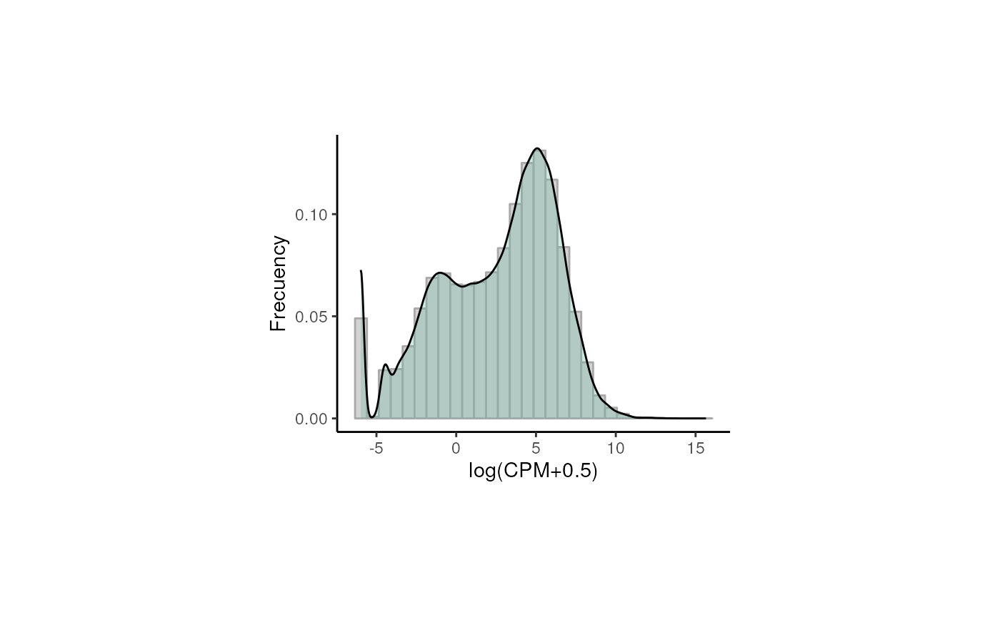
In this third plot we can observe a curve that is closer (though not completely) to a normal distribution and with less lowly-expressed genes.
With the object rse_gene_filt we can proceed with
downstream analyses.
2. Exploratory Data Analysis
The first formal step that we will be performing is the sample exploration. This crucial initial part of the analysis consists of an examination of differences and relationships between Quality-Control (QC) metrics of the samples from different groups in order to identify poor-quality samples that must be removed before DEA. After that, we will evaluate the similarities and grouping (not clustering) of the samples by their gene expression variation through a dimensionality reduction analysis. Finally, the sample variables in the metadata also need to be analyzed and filtered based on the percentage of gene expression variance that they explain for each gene.
2.1 Quality Control Analysis
First we have to explore and compare the quality-control metrics of the samples in the different groups given by covariates such as age, sex, pregnancy state, group, plate and flowcell. See Sample Information for a description of these variables.
❓ Why is that relevant? As you could imagine, technical and methodological differences in all the steps that were carried out during the experimental stages are potential sources of variation in the quality of the samples. Just imagine all that could have been gone wrong or unexpected while experimenting with mice, during the sampling, in the RNA extraction using different batches, when treating samples in different mediums, when preparing libraries in different plates and sequencing in different flowcells. Moreover, the inherent features of the mice from which the samples come from such as age, tissue, sex and pregnancy state could also affect the samples’ metrics if, for example, they were separately analyzed and processed.
❓But why do we care about mitochondrial and ribosomal counts as QC metrics? In the process of mRNA extraction, either by mRNA enrichment (capturing polyadenylated mRNAs) or rRNA-depletion (removing rRNA), we’d expect to have a low number of ribosomal counts, i.e., counts that map to rDNA, and if we don’t, something must have gone wrong with the procedures. In the case of mitochondrial counts something similar occurs: higher mitochondrial rates will be obtained if the cytoplasmic mRNA capture was deficient or if the transcripts were lost by some technical issue, increasing the proportion of mitochondrial mRNAs. As a result, high mitoRate and rRNA_rate imply poor quality in the samples.
Note: the QC metrics were computed with the unprocessed datasets (neither filtered nor normalized) to preserve the original estimates of the samples.
2.1.1 Evaluate QC metrics for groups of samples
Fortunately, we can identify to some extent possible factors that could have influenced on the quality of the samples, as well as isolated samples that are problematic. To do that, we will create boxplots that present the distribution of the samples’ metrics separating them by sample variables.
library(Hmisc)
library(stringr)
library(cowplot)
## Define QC metrics of interest
qc_metrics <- c("mitoRate", "overallMapRate", "totalAssignedGene", "rRNA_rate", "sum", "detected", "ERCCsumLogErr")
## Define sample variables of interest
sample_variables <- c("Group", "Age", "Sex", "Pregnancy", "plate", "flowcell")
## Function to create boxplots of QC metrics for groups of samples
QC_boxplots <- function(qc_metric, sample_var) {
## Define sample colors depending on the sample variable
if (sample_var == "Group") {
colors <- c("Control" = "brown2", "Experimental" = "deepskyblue3")
} else if (sample_var == "Age") {
colors <- c("Adult" = "slateblue3", "Pup" = "yellow3")
} else if (sample_var == "Sex") {
colors <- c("F" = "hotpink1", "M" = "dodgerblue")
} else if (sample_var == "Pregnancy") {
colors <- c("Yes" = "darkorchid3", "No" = "darkolivegreen4")
} else if (sample_var == "plate") {
colors <- c("Plate1" = "darkorange", "Plate2" = "lightskyblue", "Plate3" = "deeppink1")
} else if (sample_var == "flowcell") {
colors <- c(
"HKCG7DSXX" = "chartreuse2", "HKCMHDSXX" = "magenta", "HKCNKDSXX" = "turquoise3",
"HKCTMDSXX" = "tomato"
)
}
## Axis labels
x_label <- capitalize(sample_var)
y_label <- str_replace_all(qc_metric, c("_" = ""))
## x-axis text angle and position
if (sample_var == "flowcell") {
x_axis_angle <- 18
x_axis_hjust <- 0.5
x_axis_vjust <- 0.7
x_axis_size <- 4
} else {
x_axis_angle <- 0
x_axis_hjust <- 0.5
x_axis_vjust <- 0.5
x_axis_size <- 6
}
## Extract sample data in colData(rse_gene_filt)
data <- data.frame(colData(rse_gene_filt))
## Sample variable separating samples in x-axis and QC metric in y-axis
## (Coloring by sample variable)
plot <- ggplot(data = data, mapping = aes(x = !!rlang::sym(sample_var), y = !!rlang::sym(qc_metric), color = !!rlang::sym(sample_var))) +
## Add violin plots
geom_violin(alpha = 0, size = 0.4, color = "black", width = 0.7) +
## Spread dots
geom_jitter(width = 0.08, alpha = 0.7, size = 1.3) +
## Add boxplots
geom_boxplot(alpha = 0, size = 0.4, width = 0.1, color = "black") +
## Set colors
scale_color_manual(values = colors) +
## Define axis labels
labs(y = y_label, x = x_label) +
## Get rid of the background
theme_bw() +
## Hide legend and define plot margins and size of axis title and text
theme(
legend.position = "none",
plot.margin = unit(c(0.5, 0.4, 0.5, 0.4), "cm"),
axis.title = element_text(size = 7),
axis.text = element_text(size = x_axis_size),
axis.text.x = element_text(angle = x_axis_angle, hjust = x_axis_hjust, vjust = x_axis_vjust)
)
return(plot)
}
## Plots of all QC metrics for each sample variable
multiple_QC_boxplots <- function(sample_var) {
i <- 1
plots <- list()
for (qc_metric in qc_metrics) {
## Call function to create each individual plot
plots[[i]] <- QC_boxplots(qc_metric, sample_var)
i <- i + 1
}
## Arrange multiple plots into a grid
print(plot_grid(plots[[1]], plots[[2]], plots[[3]], plots[[4]], plots[[5]], plots[[6]], plots[[7]], nrow = 2))
}
multiple_QC_boxplots("Age")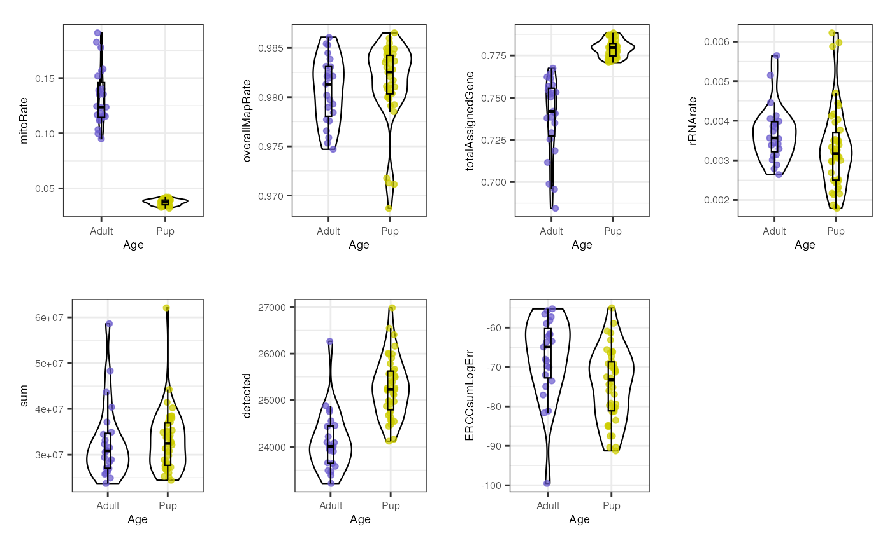
Initially, when we separate samples by Age, we can appreciate a clear segregation of adult and pup samples in mitoRate , with higher mitochondrial rates for adult samples and thus, being lower quality samples than the pup ones. We can also see that pup samples have higher totalAssignedGene , again being higher quality. The samples are very similar in the rest of the QC metrics. The former differences must be taken into account because they guide further sample separation by Age, which is necessary to avoid dropping most of the adult samples (that are lower quality) in the QC-based sample filtering (see below) and to prevent misinterpreting sample variation given by quality and not by mouse age itself.
multiple_QC_boxplots("Group")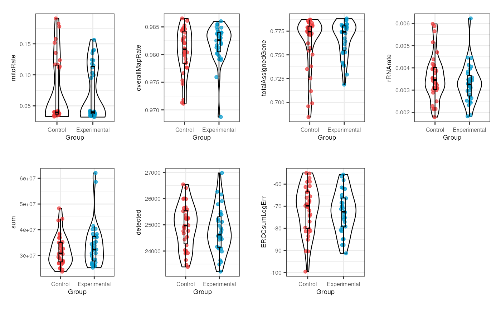
Notably, for Group no evident contrasts are seen in the quality of the samples, which means that both control and exposed samples have similar metrics and therefore the differences between them won’t be determined by technical factors but effectively by gene expression changes.
multiple_QC_boxplots("plate")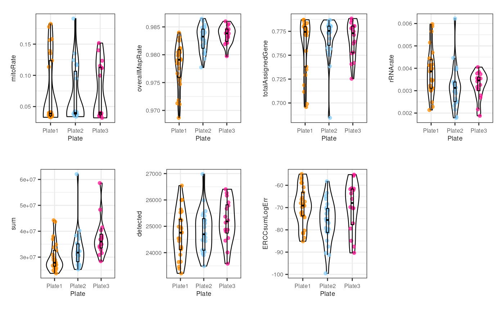
In plate, no alarming differences are presented but some samples from the 1st plate have low (though not much lower) overallMapRate , totalAssignedGene and sum .
multiple_QC_boxplots("flowcell")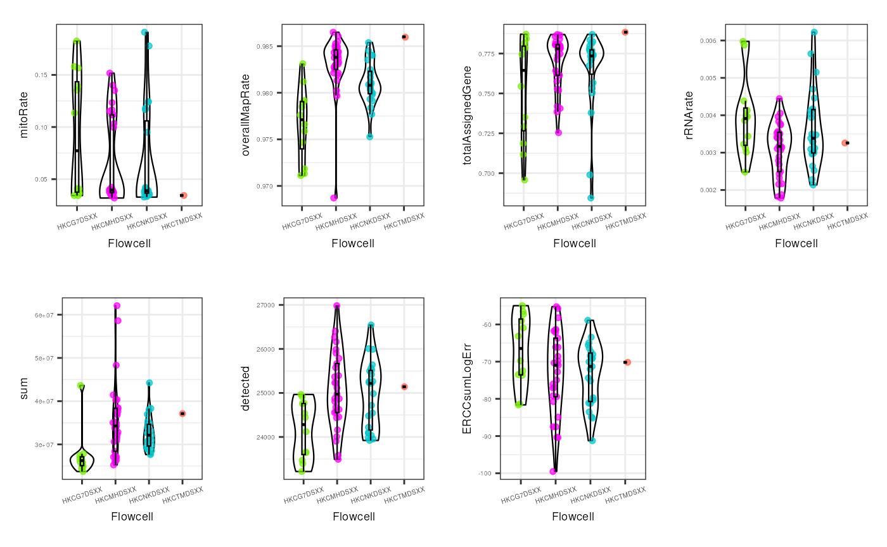
For the flowcell, again no worrying distinctions are seen, with the exception of a few individual samples far from the rest.
2.1.2 QC sample filtering
After assessing how different or similar are the QC values between
samples, we can now proceed to sample filtering based precisely, on
these metrics. For that, we will use isOutlier() from
scater to
identify outlier samples only at the lower end or the higher end,
depending on the QC metric.
library(scater)
library(rlang)
library(ggrepel)
## Separate data by Age
rse_gene_pups <- rse_gene_filt[, which(rse_gene_filt$Age == "Pup")]
rse_gene_adults <- rse_gene_filt[, which(rse_gene_filt$Age == "Adult")]
## Find outlier samples based on their QC metrics (samples that are 3 median-absolute-deviations away from the median)
## Filter all samples together
## Drop samples with lower library sizes (sum), detected number of genes and totalAssignedGene
outliers_library_size <- isOutlier(rse_gene_filt$sum, nmads = 3, type = "lower")
outliers_detected_num <- isOutlier(rse_gene_filt$detected, nmads = 3, type = "lower")
outliers_totalAssignedGene <- isOutlier(rse_gene_filt$totalAssignedGene, nmads = 3, type = "lower")
## Drop samples with higher mitoRates and rRNA rates
outliers_mito <- isOutlier(rse_gene_filt$mitoRate, nmads = 3, type = "higher")
outliers_rRNArate <- isOutlier(rse_gene_filt$rRNA_rate, nmads = 3, type = "higher")
## Keep not outlier samples
not_outliers <- which(!(outliers_library_size | outliers_detected_num | outliers_totalAssignedGene | outliers_mito | outliers_rRNArate))
rse_gene_qc <- rse_gene_filt[, not_outliers]
## Number of samples retained
dim(rse_gene_qc)[2]
#> [1] 39
## Add new variables to rse_gene_filt with info of samples retained/dropped
rse_gene_filt$Retention_after_QC_filtering <- as.vector(sapply(rse_gene_filt$SAMPLE_ID, function(x) {
if (x %in% rse_gene_qc$SAMPLE_ID) {
"Retained"
} else {
"Dropped"
}
}))
## Filter adult samples
outliers_library_size <- isOutlier(rse_gene_adults$sum, nmads = 3, type = "lower")
outliers_detected_num <- isOutlier(rse_gene_adults$detected, nmads = 3, type = "lower")
outliers_totalAssignedGene <- isOutlier(rse_gene_adults$totalAssignedGene, nmads = 3, type = "lower")
outliers_mito <- isOutlier(rse_gene_adults$mitoRate, nmads = 3, type = "higher")
outliers_rRNArate <- isOutlier(rse_gene_adults$rRNA_rate, nmads = 3, type = "higher")
not_outliers <- which(!(outliers_library_size | outliers_detected_num | outliers_totalAssignedGene | outliers_mito | outliers_rRNArate))
rse_gene_adults_qc <- rse_gene_adults[, not_outliers]
## Number of samples retained
dim(rse_gene_adults_qc)[2]
#> [1] 20
rse_gene_adults$Retention_after_QC_filtering <- as.vector(sapply(rse_gene_adults$SAMPLE_ID, function(x) {
if (x %in% rse_gene_adults_qc$SAMPLE_ID) {
"Retained"
} else {
"Dropped"
}
}))
## Filter pup samples
outliers_library_size <- isOutlier(rse_gene_pups$sum, nmads = 3, type = "lower")
outliers_detected_num <- isOutlier(rse_gene_pups$detected, nmads = 3, type = "lower")
outliers_totalAssignedGene <- isOutlier(rse_gene_pups$totalAssignedGene, nmads = 3, type = "lower")
outliers_mito <- isOutlier(rse_gene_pups$mitoRate, nmads = 3, type = "higher")
outliers_rRNArate <- isOutlier(rse_gene_pups$rRNA_rate, nmads = 3, type = "higher")
not_outliers <- which(!(outliers_library_size | outliers_detected_num | outliers_totalAssignedGene | outliers_mito | outliers_rRNArate))
rse_gene_pups_qc <- rse_gene_pups[, not_outliers]
## Number of samples retained
dim(rse_gene_pups_qc)[2]
#> [1] 41
rse_gene_pups$Retention_after_QC_filtering <- as.vector(sapply(rse_gene_pups$SAMPLE_ID, function(x) {
if (x %in% rse_gene_pups_qc$SAMPLE_ID) {
"Retained"
} else {
"Dropped"
}
}))We already filtered outlier samples … but what have we removed? It is always important to trace the QC metrics of the filtered samples to verify that they really are poor quality. We don’t want to get rid of useful samples! So let’s go back to the QC boxplots but now color samples according to whether they passed the filtering step, and also distinguishing samples’ groups by shape.
## Boxplots of QC metrics after sample filtering
## Boxplots
boxplots_after_QC_filtering <- function(rse_gene, qc_metric, sample_var) {
## Color samples
colors <- c("Retained" = "deepskyblue", "Dropped" = "brown2")
## Sample shape by sample variables
if (sample_var == "Group") {
shapes <- c("Control" = 0, "Experimental" = 15)
} else if (sample_var == "Age") {
shapes <- c("Adult" = 16, "Pup" = 1)
} else if (sample_var == "Sex") {
shapes <- c("F" = 11, "M" = 19)
} else if (sample_var == "Pregnancy") {
shapes <- c("Yes" = 10, "No" = 1)
} else if (sample_var == "plate") {
shapes <- c("Plate1" = 12, "Plate2" = 5, "Plate3" = 4)
} else if (sample_var == "flowcell") {
shapes <- c(
"HKCG7DSXX" = 3, "HKCMHDSXX" = 8, "HKCNKDSXX" = 14,
"HKCTMDSXX" = 17
)
}
y_label <- str_replace_all(qc_metric, c("_" = " "))
data <- data.frame(colData(rse_gene))
## Median of the QC var values
median <- median(eval(parse_expr(paste("rse_gene$", qc_metric, sep = ""))))
## Median-absolute-deviation of the QC var values
mad <- mad(eval(parse_expr(paste("rse_gene$", qc_metric, sep = ""))))
plot <- ggplot(data = data, mapping = aes(
x = "", y = !!rlang::sym(qc_metric),
color = !!rlang::sym("Retention_after_QC_filtering")
)) +
geom_jitter(alpha = 1, size = 2, aes(shape = eval(parse_expr((sample_var))))) +
geom_boxplot(alpha = 0, size = 0.15, color = "black") +
scale_color_manual(values = colors) +
scale_shape_manual(values = shapes) +
labs(x = "", y = y_label, color = "Retention after QC filtering", shape = sample_var) +
theme_classic() +
## Median line
geom_hline(yintercept = median, size = 0.5) +
## Line of median + 3 MADs
geom_hline(yintercept = median + (3 * mad), size = 0.5, linetype = 2) +
## Line of median - 3 MADs
geom_hline(yintercept = median - (3 * mad), size = 0.5, linetype = 2) +
theme(
axis.title = element_text(size = (9)),
axis.text = element_text(size = (8)),
legend.position = "right",
legend.text = element_text(size = 8),
legend.title = element_text(size = 9)
)
return(plot)
}In the following plot we can confirm that taking all samples together (both adults and pups) all adult samples are dropped by their high mitoRate , but that is not desirable because we want to analyze these samples too, so we need to analyze pup and adult samples separately.
## Plots
## All samples together
p <- boxplots_after_QC_filtering(rse_gene_filt, "mitoRate", "Age")
p + theme(plot.margin = unit(c(2, 4, 2, 4), "cm"))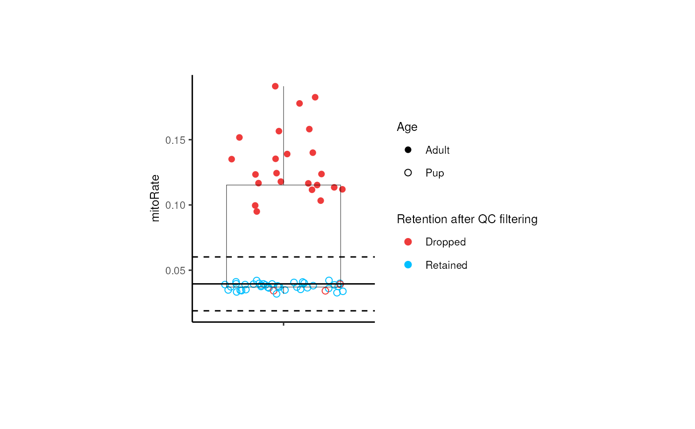 For adults, only 3 controls are dropped, 3 of them by their mitoRate .
## Adult samples
p <- boxplots_after_QC_filtering(rse_gene_adults, "mitoRate", "Group")
p + theme(plot.margin = unit(c(2, 4, 2, 4), "cm"))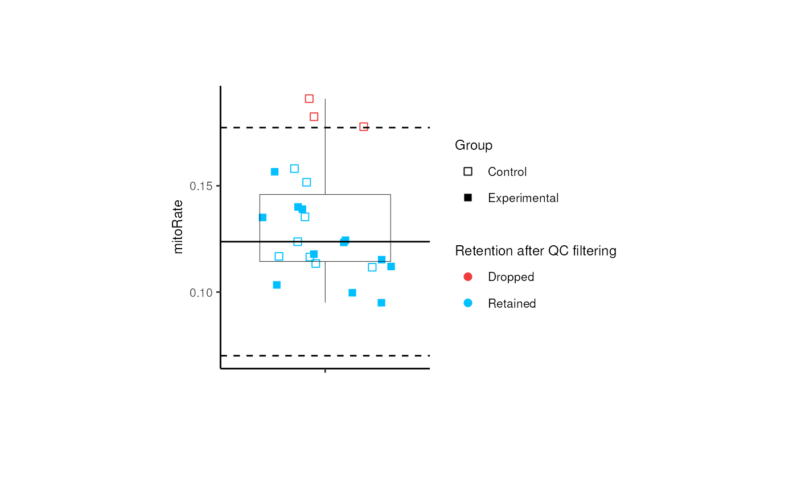
For pups, 1 experimental sample was dropped by its rRNA_rate .
## Pup samples
p <- boxplots_after_QC_filtering(rse_gene_pups, "rRNA_rate", "Group")
p + theme(plot.margin = unit(c(2, 4, 2, 4), "cm"))Try the function yourself with different QC metrics and sample variables!
2.2 Explore sample-level effects
Once data is normalized and properly filtered (features and samples), the next step is to explore the variation in gene expression of the samples to identify if a covariate explains a high proportion of the variance in the expression (if samples are separated in a PC when colored by that covariate). In few words, if a variable represents big differences in the expression values of the samples.
We are gonna create some functions to do it.
calc_PCA <- function(rse) {
## Obtain PCAs
pca_all <- prcomp(t(assays(rse)$logcounts))
## Join PCs and samples' info
pca_data <- cbind(pca_all$x, colData(rse))
return(pca_data)
}
library("ggpubr")
plot_PCAs <- function(sample_var, pca_data) {
## Define sample colors depending on the sample variable
if (sample_var == "Group") {
colors <- c("Control" = "brown2", "Experimental" = "deepskyblue3")
} else if (sample_var == "Age") {
colors <- c("Adult" = "slateblue3", "Pup" = "yellow3")
} else if (sample_var == "Sex") {
colors <- c("F" = "hotpink1", "M" = "dodgerblue")
} else if (sample_var == "Pregnancy") {
colors <- c("Yes" = "darkorchid3", "No" = "darkolivegreen4")
} else if (sample_var == "plate") {
colors <- c("Plate1" = "darkorange", "Plate2" = "lightskyblue", "Plate3" = "deeppink1")
} else if (sample_var == "flowcell") {
colors <- c(
"HKCG7DSXX" = "chartreuse2", "HKCMHDSXX" = "magenta", "HKCNKDSXX" = "turquoise3",
"HKCTMDSXX" = "tomato"
)
}
plot1 <- ggplot(as.data.frame(pca_data), aes(PC1, PC2, color = !!rlang::sym(sample_var))) +
geom_point() +
theme_bw() +
scale_color_manual(values = colors)
plot2 <- ggplot(as.data.frame(pca_data), aes(PC2, PC3, color = !!rlang::sym(sample_var))) +
geom_point() +
theme_bw() +
scale_color_manual(values = colors)
plot3 <- ggplot(as.data.frame(pca_data), aes(PC3, PC4, color = !!rlang::sym(sample_var))) +
geom_point() +
theme_bw() +
scale_color_manual(values = colors)
wplot <- ggarrange(plot1, plot2, plot3, ncol = 3, common.legend = TRUE, legend = "right")
return(wplot)
}
sample_variables <- c("Group", "Age", "Sex", "Pregnancy", "plate", "flowcell")
pca_data <- calc_PCA(rse_gene_filt)
pca_plots <- lapply(sample_variables, plot_PCAs, pca_data = pca_data)
pca_plots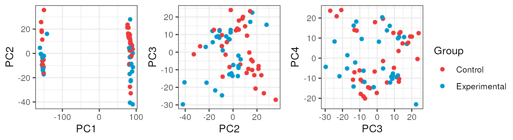
pca_data <- calc_PCA(rse_gene_pups_qc)
pca_plots <- lapply(sample_variables[-c(2, 4)], plot_PCAs, pca_data = pca_data)
pca_plots
pca_data <- calc_PCA(rse_gene_adults_qc)
pca_plots <- lapply(sample_variables[-c(2, 3)], plot_PCAs, pca_data = pca_data)
pca_plots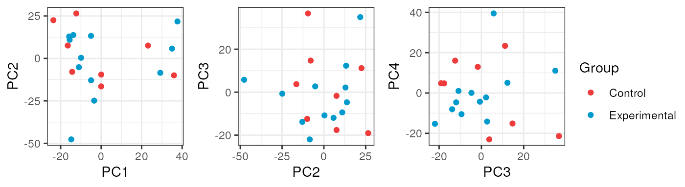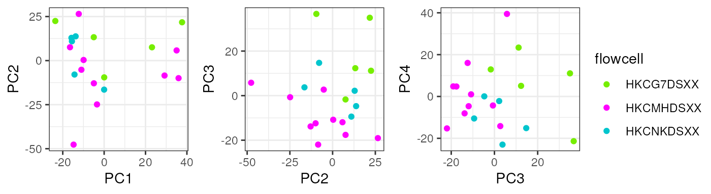
2.3 Explore gene-level effects
Once the quality and the variability of the samples have been evaluated, the next step is to explore the differences in the expression of the genes themselves in the sample groups, or in other words, to quantify the contribution of the multiple sample variables of the study in the gene expression variation, which constitutes one of the fundamental challenges when analyzing complex RNA-seq datasets [3].
To determine which variables are the major drivers of expression
variability, and importantly to define if the technical variability of
RNA-seq data is low enough to study nicotine effects, we can implement
an analysis of variance partition. variancePartition is a
package that decomposes for each gene the expression variation into
fractions of variance explained (FVE) by the sample variables of the
experimental design of high-throughput genomics studies [3].
2.3.1 Canonical Correlation Analysis
Before the analysis itself, we need to measure the correlation between the sample variables. This is an important step because highly correlated variables can produce unstable estimates of the variance fractions and hinder the identification of the variables that really contribute to the expression variation. There are at least two problems with that:
- If two variables are correlated, we could incorrectly determine that one of them contributes to gene expression changes when in reality it was just correlated with a real contributory variable.
- The part of variance explained by a biologically relevant variable can be reduced by the apparent contributions of correlated variables, if for example, they contain very similar information.
Additionally, the analysis is better performed with simpler models, specially when we have a limited number of samples in the study.
Hence, to drop such variables we must identify them first. Pearson
correlation can be used for comparing continuous variables but the
models can contain categorical variables as well, so in order to obtain
the correlation between a continuous and a categorical variable, or
between two categorical variables, we will perform a Canonical
Correlation Analysis (CCA) with canCorPairs() that assesses
the degree to which the variables co-vary and contain the same
information. This function returns rho / sum(rho), the fraction of the
maximum possible correlation. Note that CCA returns correlations values
between 0 and 1 [4].
library(variancePartition)
library(pheatmap)
####################### Variance Partition Analysis #######################
## Fraction of variation attributable to each variable after correcting for all other variables
## 1. Canonical Correlation Analysis (CCA)
## Asses the correlation between each pair of sample variables
## Plot heatmap of correlations
plot_CCA <- function(age) {
## Data
rse_gene <- eval(parse_expr(paste0("rse_gene_", age, "_qc")))
## Define variables to examine: remove those with single values
## For adults: all are females (so we drop 'Sex' variable)
if (age == "adults") {
formula <- ~ Group + Pregnancy + plate + flowcell + mitoRate + overallMapRate + totalAssignedGene + rRNA_rate + sum + detected + ERCCsumLogErr
}
## For pups: none is pregnant (so 'Pregnancy' variable is not considered)
else {
formula <- ~ Group + Sex + plate + flowcell + mitoRate + overallMapRate + totalAssignedGene + rRNA_rate + sum + detected + ERCCsumLogErr
}
## Measure correlations
C <- canCorPairs(formula, colData(rse_gene))
## Heatmap
pheatmap(
C, ## data
color = hcl.colors(50, "YlOrRd", rev = TRUE), ## color scale
fontsize = 8, ## text size
border_color = "black", ## border color for heatmap cells
cellwidth = unit(0.4, "cm"), ## height of cells
cellheight = unit(0.4, "cm") ## width of cells
)
return(C)
}As you can see, for adults there’s a strong correlation between mitoRate and totalAssignedGene . There’s also a strong correlation between plate and flowcell and between plate and overallMapRate .
## Heatmap for adult samples
CCA_adults <- plot_CCA("adults")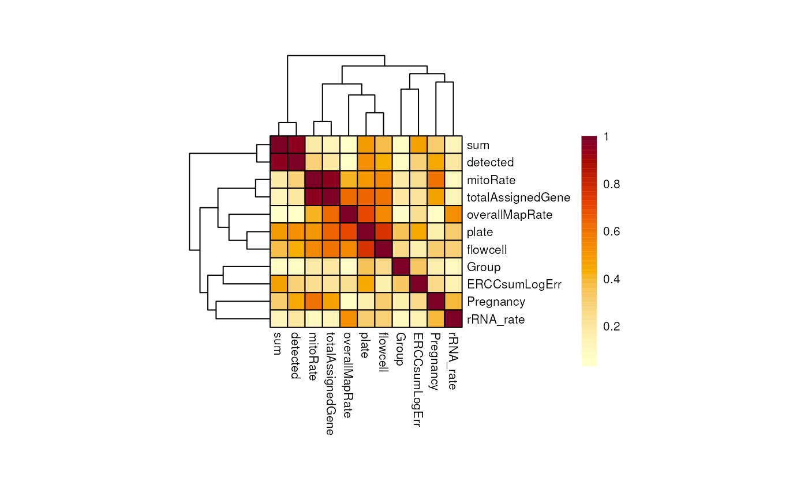
In pups overallMapRate has a relationship with rRNA_rate , plate and flowcell .
## Heatmap for pup samples
CCA_pups <- plot_CCA("pups")Importantly, in both groups of age Group is not highly correlated with any other variable. This is desirable because if this variable, the one that separates experimental and control samples, were correlated with another, then its individual contribution to gene expression changes would be diminished, affecting the results of the differential expression analysis: we would obtain gene differences driven by other variables rather than Group . Also, sum and detected are correlated.
Let’s explore why these variables are correlated in the following plots.
## 1.1 Barplots/Boxplots/Scatterplots for each pair of correlated variables
corr_plots <- function(age, sample_var1, sample_var2, sample_color) {
## Data
rse_gene <- eval(parse_expr(paste("rse_gene", age, "qc", sep = "_")))
CCA <- eval(parse_expr(paste0("CCA_", age)))
## Sample color by one variable
colors <- list(
"Group" = c("Control" = "brown2", "Experimental" = "deepskyblue3"),
"Age" = c("Adult" = "slateblue3", "Pup" = "yellow3"),
"Sex" = c("F" = "hotpink1", "M" = "dodgerblue"),
"Pregnancy" = c("Yes" = "darkorchid3", "No" = "darkolivegreen4"),
"plate" = c("Plate1" = "darkorange", "Plate2" = "lightskyblue", "Plate3" = "deeppink1"),
"flowcell" = c(
"HKCG7DSXX" = "chartreuse2", "HKCMHDSXX" = "magenta", "HKCNKDSXX" = "turquoise3",
"HKCTMDSXX" = "tomato"
)
)
data <- colData(rse_gene)
## Barplots for categorical variable vs categorical variable
if (class(data[, sample_var1]) == "character" & class(data[, sample_var2]) == "character") {
## y-axis label
if (sample_var2 == "Pregnancy") {
y_label <- paste("Number of samples from each ", sample_var2, " group", sep = "")
} else {
y_label <- paste("Number of samples from each ", sample_var2, sep = "")
}
# Stacked barplot with counts for 2nd variable
plot <- ggplot(data = as.data.frame(data), aes(
x = !!rlang::sym(sample_var1),
fill = !!rlang::sym(sample_var2)
)) +
geom_bar(position = "stack") +
## Colors by 2nd variable
scale_fill_manual(values = colors[[sample_var2]]) +
## Show sample counts on stacked bars
geom_text(aes(label = after_stat(count)),
stat = "count",
position = position_stack(vjust = 0.5), colour = "gray20", size = 3
) +
theme_bw() +
labs(
subtitle = paste0("Corr: ", signif(CCA[sample_var1, sample_var2], digits = 3)),
y = y_label
) +
theme(
axis.title = element_text(size = (7)),
axis.text = element_text(size = (6)),
plot.subtitle = element_text(size = 7, color = "gray40"),
legend.text = element_text(size = 6),
legend.title = element_text(size = 7)
)
}
## Boxplots for categorical variable vs continuous variable
else if (class(data[, sample_var1]) == "character" & class(data[, sample_var2]) == "numeric") {
plot <- ggplot(data = as.data.frame(data), mapping = aes(
x = !!rlang::sym(sample_var1),
y = !!rlang::sym(sample_var2),
color = !!rlang::sym(sample_var1)
)) +
geom_boxplot(size = 0.25, width = 0.32, color = "black", outlier.color = "#FFFFFFFF") +
geom_jitter(width = 0.15, alpha = 1, size = 1) +
stat_smooth(geom = "line", alpha = 0.6, size = 0.4, span = 0.3, method = lm, aes(group = 1), color = "orangered3") +
scale_color_manual(values = colors[[sample_var1]]) +
theme_bw() +
guides(color = "none") +
labs(
subtitle = paste0("Corr: ", signif(CCA[sample_var1, sample_var2], digits = 3)), y = gsub("_", " ", sample_var2),
x = sample_var1
) +
theme(
axis.title = element_text(size = (7)),
axis.text = element_text(size = (6)),
plot.subtitle = element_text(size = 7, color = "gray40"),
legend.text = element_text(size = 6),
legend.title = element_text(size = 7)
)
}
## Scatterplots for continuous variable vs continuous variable
else if (class(data[, sample_var1]) == "numeric" & class(data[, sample_var2]) == "numeric") {
plot <- ggplot(as.data.frame(data), aes(
x = !!rlang::sym(sample_var1),
y = !!rlang::sym(sample_var2),
color = !!rlang::sym(sample_color)
)) +
geom_point(size = 2) +
stat_smooth(geom = "line", alpha = 0.4, size = 0.4, span = 0.25, method = lm, color = "orangered3") +
## Color by sample_color variable
scale_color_manual(name = sample_color, values = colors[[sample_color]]) +
theme_bw() +
labs(subtitle = paste0("Corr: ", signif(CCA[sample_var1, sample_var2], digits = 3)), y = gsub("_", " ", sample_var2), x = gsub("_", " ", sample_var1)) +
theme(
axis.title = element_text(size = (7)),
axis.text = element_text(size = (6)),
plot.subtitle = element_text(size = 7, color = "gray40"),
legend.text = element_text(size = 6),
legend.title = element_text(size = 7)
)
}
return(plot)
}As shown below, the mitochondrial rate and the fraction of reads that mapped to genes are negatively correlated in adults but control and experimental samples are evenly distributed.
## Correlation plots for adults
p <- corr_plots("adults", "mitoRate", "totalAssignedGene", "Group")
p + theme(plot.margin = unit(c(2, 4, 2, 4), "cm"))Although not expected, the flowcell and the plate of the adult samples were correlated, but that is due to the fact that all samples from the first flowcell (HKCG7DSXX) were in the 1st plate, and almost all samples from the second flowcell were in the 3rd plate.
p <- corr_plots("adults", "flowcell", "plate", NULL)
p + theme(plot.margin = unit(c(1.5, 4.5, 1.5, 4.5), "cm"))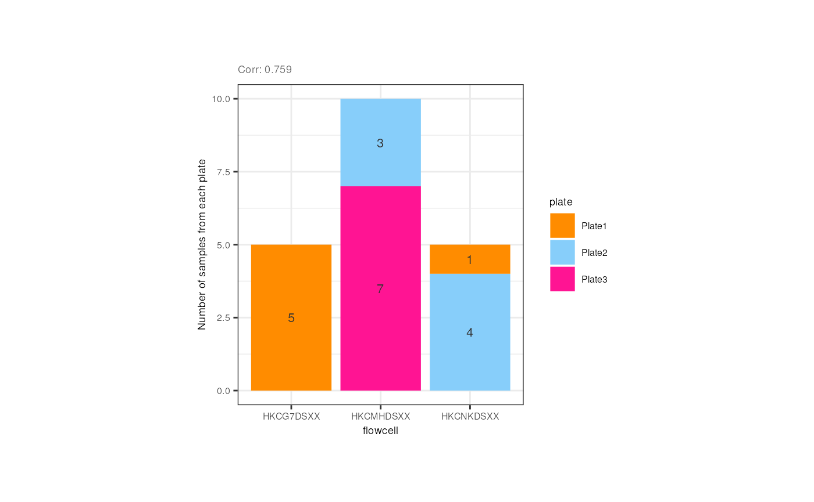
We also appreciated that the library size and the number of detected of genes are correlated in pups and adults. Note however that in pups control samples have bigger numbers of expressed genes.
p <- corr_plots("adults", "sum", "detected", "Group")
p + theme(plot.margin = unit(c(2, 4, 2, 4), "cm"))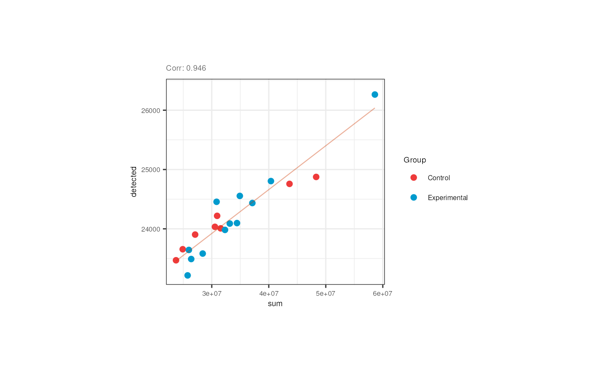
## Correlation plots for pups
p <- corr_plots("pups", "sum", "detected", "Group")
p + theme(plot.margin = unit(c(2, 4, 2, 4), "cm"))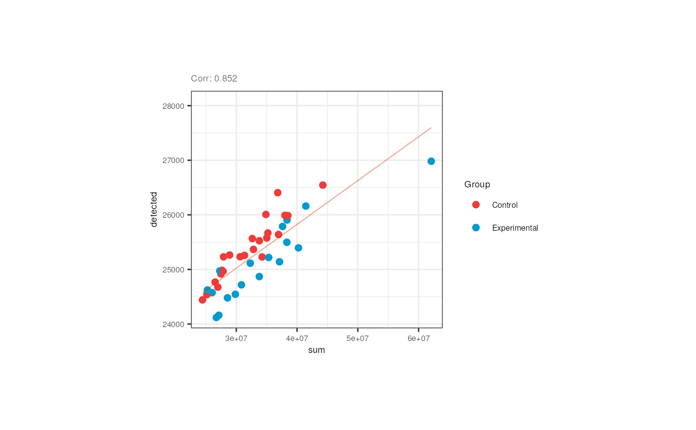
Plate was also slightly correlated with the overall mapping rate, but if we look closely, the trend is given by the plate 1 samples that have lower rates; the rates of samples from the 2nd and 3rd plates are similar.
p <- corr_plots("pups", "plate", "overallMapRate", NULL)
p + theme(plot.margin = unit(c(2, 5.3, 2, 5.3), "cm"))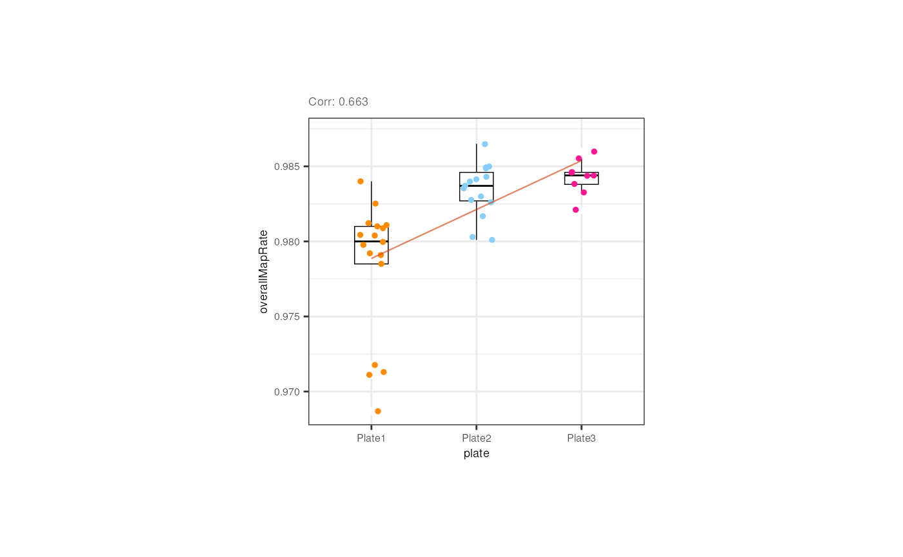
Now look at the following plots. Why is it important that experimental and control samples are distributed throughout all the plates and flowcells?
p1 <- corr_plots("adults", "Group", "plate", NULL)
p2 <- corr_plots("pups", "Group", "plate", NULL)
p3 <- corr_plots("adults", "Group", "flowcell", NULL)
p4 <- corr_plots("pups", "Group", "flowcell", NULL)
plots <- plot_grid(p1, p2, p3, p4, ncol = 2)
plots + theme(plot.margin = unit(c(1, 2.5, 1, 2.5), "cm"))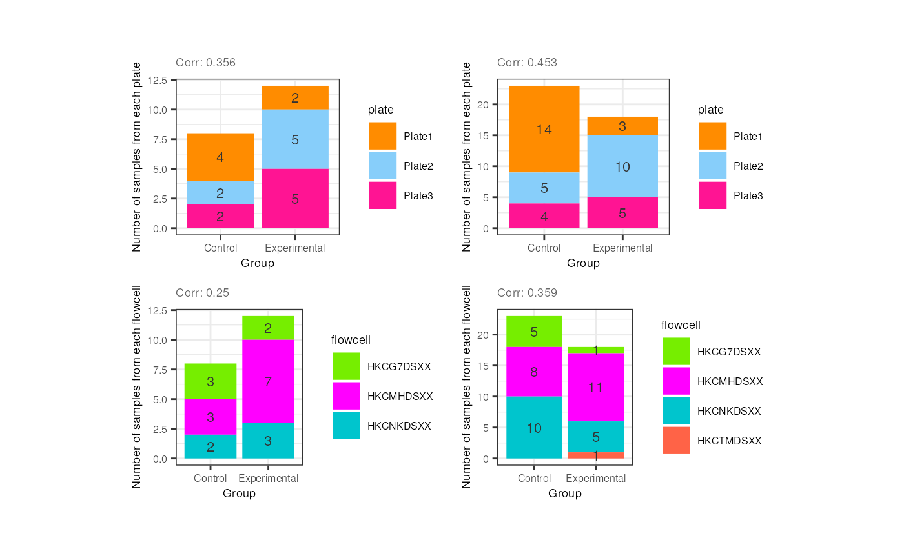Hint: What would happen if all experimental samples were in one plate or flowcell and controls in another?
After identifying which variables are correlated and exploring the
metrics of control and experimental samples the next step is to
determine which of these variables must be removed. How do we discern
which of the correlated variables to keep and which to drop? As
recommended in the variancePartition user’s guide [4],
initially we can fit a linear model for each gene taking all sample
variables and then define which ones explain a higher percentage of
variance in many genes. But first let’s review how
variancePartition works.
2.3.2 Fit model and extract fraction of variance explained
Briefly, variancePartition fits a linear model for each
gene separately and calcVarPart() computes the fraction of
variance in gene expression that is explained by each variable of the
study design, plus the residual variation. The effect of each variable
is assessed while jointly accounting for all others [3].
Basically what it does is calculate the data variance given by each variable and that of the total model fit, summarizing the contribution of each variable in terms of the fraction of variation explained (FVE). Since it calculates the fraction of total variation attributable to each aspect of the study design, these fractions naturally sum to 1 [3].
variancePartition fits two types of models:
-
Linear mixed model (LMM) where all categorical
variables are modeled as random effects and all
continuous variables are fixed effects. The function
lmer()fromlme4is used to fit this model.
## Fit LMM specifying the existence of random effects with '(1| )'
fit <- lmer(expr ~ a + b + (1|c), data=data)- Fixed effects model, which is basically the standard linear
model (LM), where all variables are modeled as fixed effects.
The function
lm()is used to fit this model.
## Fit LM modeling all variables as fixed effects
fit <- lm(expr ~ a + b + c, data=data)In our case, the function will be modeled a mixed model since we have both effects.
❓What are random and fixed effects? How to determine if a variable is one or the other? Categorical variables are usually modeled as random effects, i.e., traits such as the batch, sex, flowcell, plate, individual, variables ‘randomly chosen or selected from a population’ and whose specific levels are not of particular interest, only the grouping of the samples by those variables. These are control variables/factors that vary randomly across individuals or groups and we use them because we must control for these effects. Think of them as having different effects on gene expression (the dependent variable) depending on their values. Continuous variables must be modeled as fixed effects; they cannot be modeled as random effects. These correspond to variables that can be measured somehow and whose levels are themselves of interest (the QC metrics, for instance); these effects would be the same for all genes.
❓Why is this effect distinction important? Because when we have clustered data, like gene expression values grouped by sex, plate, etc. we are violating the relevant assumption of independence, making an incorrect inference when using a general linear model (GLM). If we have clustered data where the variables’ values have distinct effects on gene expression, we must work with an extension of GLM, with the linear mixed model (LMM) that contains a mix of both fixed and random effects [5].
## 2. Fit model
## Fit a linear mixed model (LMM) that takes continuous variables as fixed effects and categorical variables as random effects
varPartAnalysis <- function(age, formula) {
RSE <- eval(parse_expr(paste("rse_gene", age, "qc", sep = "_")))
## Ignore genes with variance 0
genes_var_zero <- which(apply(assays(RSE)$logcounts, 1, var) == 0)
if (length(genes_var_zero) > 0) {
RSE <- RSE[-genes_var_zero, ]
}
## Loop over each gene to fit model and extract variance explained by each variable
varPart <- fitExtractVarPartModel(assays(RSE)$logcounts, formula, colData(RSE))
# Sort variables by median fraction of variance explained
vp <- sortCols(varPart)
p <- plotVarPart(vp)
return(list(p, vp))
}
## Violin plots
##### Model with all variables #####
## Adults
## Define variables; random effects indicated with (1| )
formula <- ~ (1 | Group) + (1 | Pregnancy) + (1 | plate) + (1 | flowcell) + mitoRate + overallMapRate +
totalAssignedGene + rRNA_rate + sum + detected + ERCCsumLogErr
plot <- varPartAnalysis("adults", formula)[[1]]
plot + theme(
plot.margin = unit(c(1, 1, 1, 1), "cm"),
axis.text.x = element_text(size = (7)),
axis.text.y = element_text(size = (7.5))
)As presented above, in adults we can notice that totalAssignedGene has a larger mean FVE than mitoRate so we keep the former. Same reason to remove plate that is correlated with flowcell and with overallMapRate , and to drop sum that goes after detected .
##### Model without correlated variables #####
## Adult plots without mitoRate, plate and sum
formula <- ~ (1 | Group) + (1 | Pregnancy) + (1 | flowcell) + overallMapRate + totalAssignedGene + rRNA_rate + detected + ERCCsumLogErr
varPart <- varPartAnalysis("adults", formula)
varPart_data_adults <- varPart[[2]]
plot <- varPart[[1]]
plot + theme(
plot.margin = unit(c(1, 1, 1, 1), "cm"),
axis.text.x = element_text(size = (7)),
axis.text.y = element_text(size = (7.5))
)Notwithstanding, in this new reduced model Group contribution doesn’t increment much in comparison with the complete model and also note that the % of variance explained by the residuals, i.e., the % of gene expression variance that the model couldn’t explain, increments in this model compared to the previous; by removing independent variables to a regression equation, we can explain less of the variance of the dependent variable [5]. That’s the price to pay when dropping variables but it is convenient in this case since we don’t have many samples for the model to determine their real unique contributions.
In pups, based on the model with all variables, again sum must be removed, as well as rRNA_rate and plate that are correlated with overallMapRate .
##### Model with all variables #####
## Pups
formula <- ~ (1 | Group) + (1 | Sex) + (1 | plate) + (1 | flowcell) + mitoRate + overallMapRate +
totalAssignedGene + rRNA_rate + sum + detected + ERCCsumLogErr
plot <- varPartAnalysis("pups", formula)[[1]]
plot + theme(
plot.margin = unit(c(1, 1, 1, 1), "cm"),
axis.text.x = element_text(size = (7)),
axis.text.y = element_text(size = (7.5))
)Without correlated variables, Group’s contribution increases but so does the residual source.
##### Model without correlated variables #####
## Pup plots without sum, rRNA_rate and plate
formula <- ~ (1 | Group) + (1 | Sex) + (1 | flowcell) + mitoRate + overallMapRate + totalAssignedGene + detected + ERCCsumLogErr
varPart <- varPartAnalysis("pups", formula)
varPart_data_pups <- varPart[[2]]
plot <- varPart[[1]]
plot + theme(
plot.margin = unit(c(1, 1, 1, 1), "cm"),
axis.text.x = element_text(size = (7)),
axis.text.y = element_text(size = (7.5))
)At this point we have extracted normalized counts and filtered genes, we have taken out poor-quality samples and we have decided which sample variables to retain for future analyses. Now we are ready for the DEA!
3. Differential Expression Analysis
3.1 Modeling
So once we have decided which variables to include in the models for
DEA, we can start using limma to fit a linear model for
each gene and estimate the logFC’s for the contrast of interest:
Group.
## DEA for nicotine vs ctrls
DEA_expt_vs_ctl <- function(age, formula) {
RSE <- eval(parse_expr(paste("rse_gene", age, "qc", sep = "_")))
par(mfrow = c(2, 2), mar = c(4, 6, 4, 6))
## Model matrix
model <- model.matrix(formula, data = colData(RSE))
## Comparison of interest: Group
coef <- "GroupExperimental"
## voom():
## Transform counts to log2(CPM)
## Estimate mean-variance relationship for each gene
## Compute weights for limma
vGene <- voom(assay(RSE), design = model, plot = TRUE)
## lmFit():
## Fit linear model for each gene to estimate logFCs
fitGene <- lmFit(vGene)
## eBayes():
## Compute empirical Bayes statistics
eBGene <- eBayes(fitGene)
## Plot average log expression vs log2FC
limma::plotMA(eBGene,
coef = coef, xlab = "Mean of normalized counts",
ylab = "log2FC"
)
## Plot -log(p-value) vs log2FC
volcanoplot(eBGene, coef = coef)
## topTable():
## Rank genes by logFC for Group (nicotine vs ctrl)
top_genes <- topTable(eBGene, coef = coef, p.value = 1, number = nrow(RSE), sort.by = "none")
## Histogram of adjusted p-values
hist(top_genes$adj.P.Val, xlab = "Adjusted p-value", main = "")
# dev.off()
return(list(top_genes, vGene, eBGene))
}So for the adults we can see in the histogram that there are not DEGs (genes with FDR<0.05).
## DEA for adults
formula <- ~ Group + Pregnancy + flowcell + overallMapRate + totalAssignedGene + rRNA_rate + detected + ERCCsumLogErr
results_adults <- DEA_expt_vs_ctl("adults", formula)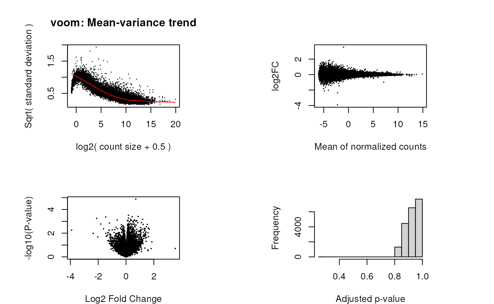
top_genes_adults <- results_adults[[1]]
vGene_adults <- results_adults[[2]]
eBGene_adults <- results_adults[[3]]
## Number of DEGs (FDR<0.05)
length(which(top_genes_adults$adj.P.Val < 0.05))
#> [1] 0But for pups there are 1667 DEGs for control vs nicotine administration.
## DEA for pups
formula <- ~ Group + Sex + flowcell + mitoRate + overallMapRate + totalAssignedGene + detected + ERCCsumLogErr
results_pups <- DEA_expt_vs_ctl("pups", formula)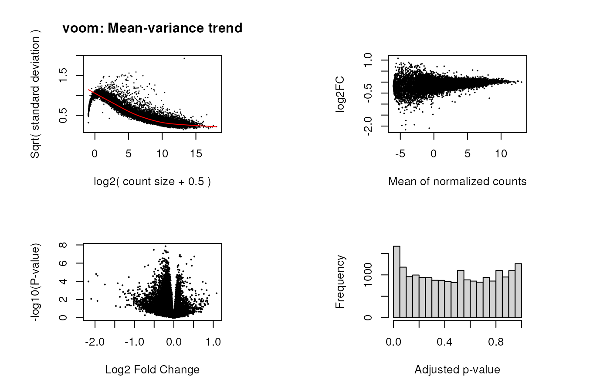
top_genes_pups <- results_pups[[1]]
vGene_pups <- results_pups[[2]]
eBGene_pups <- results_pups[[3]]
## Number of DEGs (FDR<0.05)
length(which(top_genes_pups$adj.P.Val < 0.05))
#> [1] 1667In the following plots we can easily identify which genes in pups were DE based on their logFC’s and FDR’s.
library(jaffelab)
## Plots for DE genes
plots_DE <- function(top_genes, vGene) {
## Define FDR threshold for significance
FDR <- 0.05
## NS/Down/Upregulated genes
DE <- vector()
for (i in 1:dim(top_genes)[1]) {
if (top_genes$adj.P.Val[i] > FDR) {
DE <- append(DE, "ns")
} else {
if (top_genes$logFC[i] > 0) {
DE <- append(DE, "Up")
} else {
DE <- append(DE, "Down")
}
}
}
top_genes$DE <- DE
## Gene symbols for top up and down DEGs
up_DEGs <- top_genes[which(top_genes$logFC > 0 & top_genes$adj.P.Val < 0.05), ]
down_DEGs <- top_genes[which(top_genes$logFC < 0 & top_genes$adj.P.Val < 0.05), ]
## Top most significant up and down DEGs
top_up_DEGs <- rownames(up_DEGs[order(up_DEGs$adj.P.Val)[1], ])
top_down_DEGs <- rownames(down_DEGs[order(down_DEGs$adj.P.Val)[1], ])
DEG_symbol <- vector()
for (i in 1:dim(top_genes)[1]) {
if (rownames(top_genes)[i] %in% top_up_DEGs | rownames(top_genes)[i] %in% top_down_DEGs) {
DEG_symbol <- append(DEG_symbol, rownames(top_genes)[i])
} else {
DEG_symbol <- append(DEG_symbol, NA)
}
}
top_genes$DEG_symbol <- DEG_symbol
## MA plot for DE genes
cols <- c("Up" = "firebrick2", "Down" = "steelblue2", "ns" = "grey")
sizes <- c("Up" = 2, "Down" = 2, "ns" = 1)
alphas <- c("Up" = 1, "Down" = 1, "ns" = 0.5)
top_genes$mean_log_expr <- apply(vGene$E, 1, mean)
p1 <- ggplot(
data = top_genes,
aes(
x = mean_log_expr, y = logFC,
fill = DE,
size = DE,
alpha = DE
)
) +
geom_point(
shape = 21,
colour = "black"
) +
scale_fill_manual(values = cols) +
scale_size_manual(values = sizes) +
scale_alpha_manual(values = alphas) +
labs(x = "Mean of normalized counts", y = "log2FC") +
theme(plot.margin = unit(c(2, 0.2, 2, 0.2), "cm"))
## Volcano plot for DE genes
p2 <- ggplot(
data = top_genes,
aes(
x = logFC, y = -log10(adj.P.Val),
fill = DE,
size = DE,
alpha = DE,
label = DEG_symbol
)
) +
geom_point(shape = 21) +
geom_hline(
yintercept = -log10(FDR),
linetype = "dashed"
) +
geom_label_repel(
fill = "white", size = 2, max.overlaps = Inf,
box.padding = 0.2,
show.legend = FALSE
) +
labs(y = "-log10(FDR)", x = "log2FC") +
scale_fill_manual(values = cols) +
scale_size_manual(values = sizes) +
scale_alpha_manual(values = alphas) +
theme(plot.margin = unit(c(2, 0.2, 2, 0.2), "cm"))
plot_grid(p1, p2, ncol = 2)
}
plots_DE(top_genes_adults, vGene_adults)
plots_DE(top_genes_pups, vGene_pups)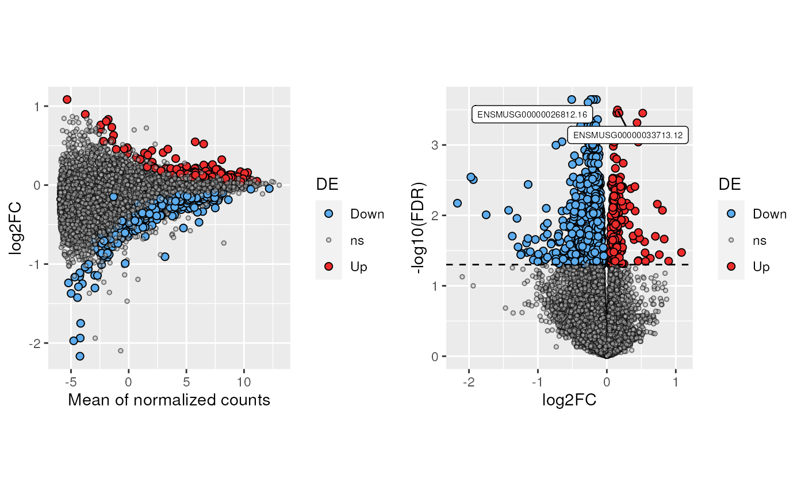
We can also plot the expression counts (without batch effects) of particular DEGs in control and experimental samples, such as the genes labeled in the above volcano plot. We can see that for the gene ENSMUSG00000026812.16 which was downregulated, its expression levels go down in experimental samples compared to controls, and the opposite for ENSMUSG00000033713.12 that was upregulated.
## Boxplot of a single gene
DE_one_boxplot <- function(age, DEgene) {
RSE <- eval(parse_expr(paste("rse_gene", age, "qc", sep = "_")))
top_genes <- eval(parse_expr(paste("top_genes", age, sep = "_")))
vGene <- eval(parse_expr(paste("vGene", age, sep = "_")))
if (age == "pups") {
formula <- ~ Group + Sex + flowcell + mitoRate + overallMapRate + totalAssignedGene + detected + ERCCsumLogErr
} else {
formula <- ~ Group + Pregnancy + flowcell + overallMapRate + totalAssignedGene + rRNA_rate + detected + ERCCsumLogErr
}
## q-value for the gene
q_value <- signif(top_genes[which(rownames(top_genes) == DEgene), "adj.P.Val"], digits = 3)
## logFC for the gene
logFC <- signif(top_genes[which(rownames(top_genes) == DEgene), "logFC"], digits = 3)
## Regress out residuals to remove batch effects
model <- model.matrix(formula, data = colData(RSE))
vGene$E <- cleaningY(vGene$E, model, P = 2)
## Samples as rows and genes as columns
lognorm_DE <- t(vGene$E)
## Add samples' Group information
lognorm_DE <- data.frame(lognorm_DE, "Group" = colData(RSE)$Group)
p <- ggplot(
data = as.data.frame(lognorm_DE),
aes(x = Group, y = eval(parse_expr(DEgene)))
) +
## Hide outliers
geom_boxplot(outlier.color = "#FFFFFFFF") +
## Samples colored by Group + noise
geom_jitter(aes(colour = Group),
shape = 16,
position = position_jitter(0.2), size = 2
) +
theme_classic() +
scale_color_manual(values = c("Control" = "brown2", "Experimental" = "deepskyblue3")) +
labs(
x = "Group", y = "norm counts - covariates",
title = DEgene,
subtitle = paste(" FDR:", q_value, "\n", "logFC:", logFC)
) +
theme(
plot.margin = unit(c(1.5, 2.5, 1.5, 2.5), "cm"), legend.position = "none",
plot.title = element_text(hjust = 0.5, size = 10, face = "bold"),
plot.subtitle = element_text(size = 9)
)
return(p)
}3.2 Comparisons
Now that we have computed statistics for DE we can compare the t-stats of the genes in pups and adults to examine the signals for DE in both ages.
## 1. t-stats plots
## Function to add DE info of genes in both groups
add_DE_info <- function(top_genes1, top_genes2, name_1, name_2) {
DE <- vector()
for (i in 1:dim(top_genes1)[1]) {
## DE genes in both groups
if (top_genes1$adj.P.Val[i] < 0.05 && top_genes2$adj.P.Val[i] < 0.05) {
DE <- append(DE, "sig Both")
}
## DE genes in only one of the groups
else if (top_genes1$adj.P.Val[i] < 0.05 && !top_genes2$adj.P.Val[i] < 0.05) {
DE <- append(DE, paste("sig", name_1))
} else if (top_genes2$adj.P.Val[i] < 0.05 && !top_genes1$adj.P.Val[i] < 0.05) {
DE <- append(DE, paste("sig", name_2))
}
## ns genes in both groups
else {
DE <- append(DE, "n.s.")
}
}
return(DE)
}
## Compare t-stats of genes from different groups of samples
t_stat_plot <- function(top_genes1, top_genes2, name_1, name_2) {
## Correlation coeff
rho <- cor(top_genes1$t, top_genes2$t, method = "spearman")
rho_anno <- paste0("rho = ", format(round(rho, 2), nsmall = 2))
## Merge data
t_stats <- data.frame(t1 = top_genes1$t, t2 = top_genes2$t)
## Add DE info for both groups
t_stats$DEG <- add_DE_info(top_genes1, top_genes2, name_1, name_2)
cols <- c("red", "#ffad73", "#26b3ff", "dark grey")
names(cols) <- c("sig Both", paste0("sig ", name_1), paste0("sig ", name_2), "n.s.")
alphas <- c(1, 1, 1, 0.5)
names(alphas) <- c("sig Both", paste0("sig ", name_1), paste0("sig ", name_2), "n.s.")
plot <- ggplot(t_stats, aes(x = t1, y = t2, color = DEG, alpha = DEG)) +
geom_point(size = 1) +
labs(
x = paste("t-stats", name_1),
y = paste("t-stats", name_2),
title = "Pups vs Adults",
subtitle = rho_anno,
parse = T
) +
theme_bw() +
scale_color_manual(values = cols) +
scale_alpha_manual(values = alphas)
return(plot)
}
## Compare t-stats of genes in Pups vs Adults
t_stat_plot(top_genes_pups, top_genes_adults, "Nicotine pups", "Nicotine adults") + theme(plot.margin = unit(c(1.5, 3.5, 1.5, 3.5), "cm"))As shown above, there’s no correlation between the t-stats of the genes in pups and adults, which could be interpreted as the genes having different signals for differential expression in both ages.
References
Evans, C., Hardin, J., & Stoebel, D. M. (2018). Selecting between-sample RNA-Seq normalization methods from the perspective of their assumptions. Briefings in bioinformatics, 19(5), 776-792.
Bedre, R. (2023). Gene expression units explained: RPM, RPKM, FPKM, TPM, DESeq, TMM, SCnorm, GeTMM, and ComBat-Seq. Web site: https://www.reneshbedre.com/blog/expression_units.html
Hoffman, G. E., & Schadt, E. E. (2016). variancePartition: interpreting drivers of variation in complex gene expression studies. BMC bioinformatics, 17(1), 1-13.
Hoffman, G. (2022). variancePartition: Quantifying and interpreting drivers of variation in multilevel gene expression experiments.
van den Berg, S. M. (2022). Analysing data using linear models. Web site: https://bookdown.org/pingapang9/linear_models_bookdown/
Additional resources
Check the material for the course of Statistical Analysis of Genome Scale Data at CSHL 2023 for more exercises and explanations of the analyses for differential expression.
Reproducibility
Code for creating the vignette
## Create the vignette
library("rmarkdown")
system.time(render("SPEAQeasyWorkshop2023.Rmd"))
## Extract the R code
library("knitr")
knit("SPEAQeasyWorkshop2023.Rmd", tangle = TRUE)Date the vignette was generated.
#> [1] "2023-07-24 18:02:15 UTC"Wallclock time spent generating the vignette.
#> Time difference of 1.354 minsR session information.
#> ─ Session info ───────────────────────────────────────────────────────────────────────────────────────────────────────
#> setting value
#> version R version 4.3.1 (2023-06-16)
#> os Ubuntu 22.04.2 LTS
#> system x86_64, linux-gnu
#> ui X11
#> language en
#> collate en_US.UTF-8
#> ctype en_US.UTF-8
#> tz UTC
#> date 2023-07-24
#> pandoc 3.1.1 @ /usr/local/bin/ (via rmarkdown)
#>
#> ─ Packages ───────────────────────────────────────────────────────────────────────────────────────────────────────────
#> package * version date (UTC) lib source
#> abind 1.4-5 2016-07-21 [1] CRAN (R 4.3.1)
#> AnnotationDbi 1.63.2 2023-07-02 [1] Bioconductor
#> AnnotationHub * 3.9.1 2023-05-01 [1] Bioconductor
#> aod 1.3.2 2022-04-02 [1] CRAN (R 4.3.1)
#> backports 1.4.1 2021-12-13 [1] CRAN (R 4.3.1)
#> base64enc 0.1-3 2015-07-28 [2] CRAN (R 4.3.1)
#> beachmat 2.17.13 2023-07-09 [1] Bioconductor
#> beeswarm 0.4.0 2021-06-01 [1] CRAN (R 4.3.1)
#> bibtex 0.5.1 2023-01-26 [1] CRAN (R 4.3.1)
#> Biobase * 2.61.0 2023-04-25 [1] Bioconductor
#> BiocFileCache * 2.9.1 2023-07-12 [1] Bioconductor
#> BiocGenerics * 0.47.0 2023-04-25 [1] Bioconductor
#> BiocManager 1.30.21.1 2023-07-18 [2] CRAN (R 4.3.1)
#> BiocNeighbors 1.19.0 2023-04-25 [1] Bioconductor
#> BiocParallel * 1.35.3 2023-07-07 [1] Bioconductor
#> BiocSingular 1.17.1 2023-07-09 [1] Bioconductor
#> BiocStyle * 2.29.1 2023-07-19 [1] Bioconductor
#> BiocVersion 3.18.0 2023-04-25 [2] Bioconductor
#> Biostrings 2.69.2 2023-07-02 [1] Bioconductor
#> bit 4.0.5 2022-11-15 [1] CRAN (R 4.3.1)
#> bit64 4.0.5 2020-08-30 [1] CRAN (R 4.3.1)
#> bitops 1.0-7 2021-04-24 [1] CRAN (R 4.3.1)
#> blob 1.2.4 2023-03-17 [1] CRAN (R 4.3.1)
#> bookdown 0.34 2023-05-09 [1] CRAN (R 4.3.1)
#> boot 1.3-28.1 2022-11-22 [3] CRAN (R 4.3.1)
#> broom 1.0.5 2023-06-09 [1] CRAN (R 4.3.1)
#> bslib 0.5.0 2023-06-09 [2] CRAN (R 4.3.1)
#> cachem 1.0.8 2023-05-01 [2] CRAN (R 4.3.1)
#> car 3.1-2 2023-03-30 [1] CRAN (R 4.3.1)
#> carData 3.0-5 2022-01-06 [1] CRAN (R 4.3.1)
#> caTools 1.18.2 2021-03-28 [1] CRAN (R 4.3.1)
#> checkmate 2.2.0 2023-04-27 [1] CRAN (R 4.3.1)
#> cli 3.6.1 2023-03-23 [2] CRAN (R 4.3.1)
#> cluster 2.1.4 2022-08-22 [3] CRAN (R 4.3.1)
#> codetools 0.2-19 2023-02-01 [3] CRAN (R 4.3.1)
#> colorspace 2.1-0 2023-01-23 [1] CRAN (R 4.3.1)
#> corpcor 1.6.10 2021-09-16 [1] CRAN (R 4.3.1)
#> cowplot * 1.1.1 2020-12-30 [1] CRAN (R 4.3.1)
#> crayon 1.5.2 2022-09-29 [2] CRAN (R 4.3.1)
#> curl 5.0.1 2023-06-07 [2] CRAN (R 4.3.1)
#> data.table 1.14.8 2023-02-17 [1] CRAN (R 4.3.1)
#> DBI 1.1.3 2022-06-18 [1] CRAN (R 4.3.1)
#> dbplyr * 2.3.3 2023-07-07 [1] CRAN (R 4.3.1)
#> DelayedArray 0.27.9 2023-07-04 [1] Bioconductor
#> DelayedMatrixStats 1.23.0 2023-04-25 [1] Bioconductor
#> desc 1.4.2 2022-09-08 [2] CRAN (R 4.3.1)
#> digest 0.6.33 2023-07-07 [2] CRAN (R 4.3.1)
#> dplyr 1.1.2 2023-04-20 [1] CRAN (R 4.3.1)
#> ellipsis 0.3.2 2021-04-29 [2] CRAN (R 4.3.1)
#> EnvStats 2.8.0 2023-07-08 [1] CRAN (R 4.3.1)
#> evaluate 0.21 2023-05-05 [2] CRAN (R 4.3.1)
#> ExperimentHub * 2.9.1 2023-07-12 [1] Bioconductor
#> fANCOVA 0.6-1 2020-11-13 [1] CRAN (R 4.3.1)
#> fansi 1.0.4 2023-01-22 [2] CRAN (R 4.3.1)
#> farver 2.1.1 2022-07-06 [1] CRAN (R 4.3.1)
#> fastmap 1.1.1 2023-02-24 [2] CRAN (R 4.3.1)
#> filelock 1.0.2 2018-10-05 [1] CRAN (R 4.3.1)
#> foreign 0.8-84 2022-12-06 [3] CRAN (R 4.3.1)
#> Formula 1.2-5 2023-02-24 [1] CRAN (R 4.3.1)
#> fs 1.6.3 2023-07-20 [2] CRAN (R 4.3.1)
#> gargle 1.5.2 2023-07-20 [1] CRAN (R 4.3.1)
#> generics 0.1.3 2022-07-05 [1] CRAN (R 4.3.1)
#> GenomeInfoDb * 1.37.2 2023-06-21 [1] Bioconductor
#> GenomeInfoDbData 1.2.10 2023-07-10 [1] Bioconductor
#> GenomicRanges * 1.53.1 2023-05-04 [1] Bioconductor
#> ggbeeswarm 0.7.2 2023-04-29 [1] CRAN (R 4.3.1)
#> ggplot2 * 3.4.2 2023-04-03 [1] CRAN (R 4.3.1)
#> ggpubr * 0.6.0 2023-02-10 [1] CRAN (R 4.3.1)
#> ggrepel * 0.9.3 2023-02-03 [1] CRAN (R 4.3.1)
#> ggsignif 0.6.4 2022-10-13 [1] CRAN (R 4.3.1)
#> glue 1.6.2 2022-02-24 [2] CRAN (R 4.3.1)
#> googledrive 2.1.1 2023-06-11 [1] CRAN (R 4.3.1)
#> gplots 3.1.3 2022-04-25 [1] CRAN (R 4.3.1)
#> gridExtra 2.3 2017-09-09 [1] CRAN (R 4.3.1)
#> gtable 0.3.3 2023-03-21 [1] CRAN (R 4.3.1)
#> gtools 3.9.4 2022-11-27 [1] CRAN (R 4.3.1)
#> highr 0.10 2022-12-22 [2] CRAN (R 4.3.1)
#> Hmisc * 5.1-0 2023-05-08 [1] CRAN (R 4.3.1)
#> htmlTable 2.4.1 2022-07-07 [1] CRAN (R 4.3.1)
#> htmltools 0.5.5 2023-03-23 [2] CRAN (R 4.3.1)
#> htmlwidgets 1.6.2 2023-03-17 [2] CRAN (R 4.3.1)
#> httpuv 1.6.11 2023-05-11 [2] CRAN (R 4.3.1)
#> httr 1.4.6 2023-05-08 [2] CRAN (R 4.3.1)
#> interactiveDisplayBase 1.39.0 2023-04-25 [1] Bioconductor
#> IRanges * 2.35.2 2023-06-22 [1] Bioconductor
#> irlba 2.3.5.1 2022-10-03 [1] CRAN (R 4.3.1)
#> iterators 1.0.14 2022-02-05 [1] CRAN (R 4.3.1)
#> jaffelab * 0.99.32 2023-07-24 [1] Github (LieberInstitute/jaffelab@21e6574)
#> jquerylib 0.1.4 2021-04-26 [2] CRAN (R 4.3.1)
#> jsonlite 1.8.7 2023-06-29 [2] CRAN (R 4.3.1)
#> KEGGREST 1.41.0 2023-04-25 [1] Bioconductor
#> KernSmooth 2.23-22 2023-07-10 [2] CRAN (R 4.3.1)
#> knitr 1.43 2023-05-25 [2] CRAN (R 4.3.1)
#> labeling 0.4.2 2020-10-20 [1] CRAN (R 4.3.1)
#> later 1.3.1 2023-05-02 [2] CRAN (R 4.3.1)
#> lattice 0.21-8 2023-04-05 [3] CRAN (R 4.3.1)
#> lifecycle 1.0.3 2022-10-07 [2] CRAN (R 4.3.1)
#> limma * 3.57.6 2023-06-19 [1] Bioconductor
#> lme4 1.1-34 2023-07-04 [1] CRAN (R 4.3.1)
#> lmerTest 3.1-3 2020-10-23 [1] CRAN (R 4.3.1)
#> lubridate 1.9.2 2023-02-10 [1] CRAN (R 4.3.1)
#> magrittr 2.0.3 2022-03-30 [2] CRAN (R 4.3.1)
#> MASS 7.3-60 2023-05-04 [3] CRAN (R 4.3.1)
#> Matrix 1.6-0 2023-07-08 [2] CRAN (R 4.3.1)
#> MatrixGenerics * 1.13.0 2023-04-25 [1] Bioconductor
#> matrixStats * 1.0.0 2023-06-02 [1] CRAN (R 4.3.1)
#> memoise 2.0.1 2021-11-26 [2] CRAN (R 4.3.1)
#> mgcv 1.9-0 2023-07-11 [2] CRAN (R 4.3.1)
#> mime 0.12 2021-09-28 [2] CRAN (R 4.3.1)
#> minqa 1.2.5 2022-10-19 [1] CRAN (R 4.3.1)
#> munsell 0.5.0 2018-06-12 [1] CRAN (R 4.3.1)
#> mvtnorm 1.2-2 2023-06-08 [1] CRAN (R 4.3.1)
#> nlme 3.1-162 2023-01-31 [3] CRAN (R 4.3.1)
#> nloptr 2.0.3 2022-05-26 [1] CRAN (R 4.3.1)
#> nnet 7.3-19 2023-05-03 [3] CRAN (R 4.3.1)
#> numDeriv 2016.8-1.1 2019-06-06 [1] CRAN (R 4.3.1)
#> pbkrtest 0.5.2 2023-01-19 [1] CRAN (R 4.3.1)
#> pheatmap * 1.0.12 2019-01-04 [1] CRAN (R 4.3.1)
#> pillar 1.9.0 2023-03-22 [2] CRAN (R 4.3.1)
#> pkgconfig 2.0.3 2019-09-22 [2] CRAN (R 4.3.1)
#> pkgdown 2.0.7.9000 2023-07-24 [1] Github (r-lib/pkgdown@c920680)
#> plyr 1.8.8 2022-11-11 [1] CRAN (R 4.3.1)
#> png 0.1-8 2022-11-29 [1] CRAN (R 4.3.1)
#> promises 1.2.0.1 2021-02-11 [2] CRAN (R 4.3.1)
#> purrr 1.0.1 2023-01-10 [2] CRAN (R 4.3.1)
#> R6 2.5.1 2021-08-19 [2] CRAN (R 4.3.1)
#> rafalib * 1.0.0 2015-08-09 [1] CRAN (R 4.3.1)
#> ragg 1.2.5 2023-01-12 [2] CRAN (R 4.3.1)
#> rappdirs 0.3.3 2021-01-31 [2] CRAN (R 4.3.1)
#> rbibutils 2.2.13 2023-01-13 [1] CRAN (R 4.3.1)
#> RColorBrewer 1.1-3 2022-04-03 [1] CRAN (R 4.3.1)
#> Rcpp 1.0.11 2023-07-06 [2] CRAN (R 4.3.1)
#> RCurl 1.98-1.12 2023-03-27 [1] CRAN (R 4.3.1)
#> Rdpack 2.4 2022-07-20 [1] CRAN (R 4.3.1)
#> RefManageR * 1.4.0 2022-09-30 [1] CRAN (R 4.3.1)
#> remaCor 0.0.16 2023-06-21 [1] CRAN (R 4.3.1)
#> reshape2 1.4.4 2020-04-09 [1] CRAN (R 4.3.1)
#> RhpcBLASctl 0.23-42 2023-02-11 [1] CRAN (R 4.3.1)
#> rlang * 1.1.1 2023-04-28 [2] CRAN (R 4.3.1)
#> rmarkdown 2.23 2023-07-01 [2] CRAN (R 4.3.1)
#> rpart 4.1.19 2022-10-21 [3] CRAN (R 4.3.1)
#> rprojroot 2.0.3 2022-04-02 [2] CRAN (R 4.3.1)
#> RSQLite 2.3.1 2023-04-03 [1] CRAN (R 4.3.1)
#> rstatix 0.7.2 2023-02-01 [1] CRAN (R 4.3.1)
#> rstudioapi 0.15.0 2023-07-07 [2] CRAN (R 4.3.1)
#> rsvd 1.0.5 2021-04-16 [1] CRAN (R 4.3.1)
#> S4Arrays 1.1.4 2023-05-14 [1] Bioconductor
#> S4Vectors * 0.39.1 2023-05-03 [1] Bioconductor
#> sass 0.4.7 2023-07-15 [2] CRAN (R 4.3.1)
#> ScaledMatrix 1.9.1 2023-05-03 [1] Bioconductor
#> scales 1.2.1 2022-08-20 [1] CRAN (R 4.3.1)
#> scater * 1.29.0 2023-05-19 [1] Bioconductor
#> scuttle * 1.11.0 2023-04-25 [1] Bioconductor
#> segmented 1.6-4 2023-04-13 [1] CRAN (R 4.3.1)
#> sessioninfo * 1.2.2 2021-12-06 [2] CRAN (R 4.3.1)
#> shiny 1.7.4.1 2023-07-06 [2] CRAN (R 4.3.1)
#> SingleCellExperiment * 1.23.0 2023-04-25 [1] Bioconductor
#> smokingMouse * 0.99.9 2023-07-24 [1] Github (LieberInstitute/smokingMouse@8ae6660)
#> SparseArray 1.1.10 2023-06-11 [1] Bioconductor
#> sparseMatrixStats 1.13.0 2023-04-25 [1] Bioconductor
#> stringi 1.7.12 2023-01-11 [2] CRAN (R 4.3.1)
#> stringr * 1.5.0 2022-12-02 [2] CRAN (R 4.3.1)
#> SummarizedExperiment * 1.31.1 2023-05-01 [1] Bioconductor
#> systemfonts 1.0.4 2022-02-11 [2] CRAN (R 4.3.1)
#> textshaping 0.3.6 2021-10-13 [2] CRAN (R 4.3.1)
#> tibble 3.2.1 2023-03-20 [2] CRAN (R 4.3.1)
#> tidyr 1.3.0 2023-01-24 [1] CRAN (R 4.3.1)
#> tidyselect 1.2.0 2022-10-10 [1] CRAN (R 4.3.1)
#> timechange 0.2.0 2023-01-11 [1] CRAN (R 4.3.1)
#> utf8 1.2.3 2023-01-31 [2] CRAN (R 4.3.1)
#> variancePartition * 1.31.11 2023-06-30 [1] Bioconductor
#> vctrs 0.6.3 2023-06-14 [2] CRAN (R 4.3.1)
#> vipor 0.4.5 2017-03-22 [1] CRAN (R 4.3.1)
#> viridis 0.6.4 2023-07-22 [1] CRAN (R 4.3.1)
#> viridisLite 0.4.2 2023-05-02 [1] CRAN (R 4.3.1)
#> withr 2.5.0 2022-03-03 [2] CRAN (R 4.3.1)
#> xfun 0.39 2023-04-20 [2] CRAN (R 4.3.1)
#> xml2 1.3.5 2023-07-06 [2] CRAN (R 4.3.1)
#> xtable 1.8-4 2019-04-21 [2] CRAN (R 4.3.1)
#> XVector 0.41.1 2023-05-03 [1] Bioconductor
#> yaml 2.3.7 2023-01-23 [2] CRAN (R 4.3.1)
#> zlibbioc 1.47.0 2023-04-25 [1] Bioconductor
#>
#> [1] /__w/_temp/Library
#> [2] /usr/local/lib/R/site-library
#> [3] /usr/local/lib/R/library
#>
#> ──────────────────────────────────────────────────────────────────────────────────────────────────────────────────────Bibliography
This vignette was generated using BiocStyle (Oleś, 2023), knitr (Xie, 2023) and rmarkdown (Allaire, Xie, Dervieux, McPherson, Luraschi, Ushey, Atkins, Wickham, Cheng, Chang, and Iannone, 2023) running behind the scenes.
Citations made with RefManageR (McLean, 2017).
[1] J. Allaire, Y. Xie, C. Dervieux, et al. rmarkdown: Dynamic Documents for R. R package version 2.23. 2023. URL: https://github.com/rstudio/rmarkdown.
[2] N. J. Eagles, E. E. Burke, J. Leonard, et al. “SPEAQeasy: a scalable pipeline for expression analysis and quantification for R/bioconductor-powered RNA-seq analyses”. In: BMC Bioinformatics (2021). DOI: 10.1186/s12859-021-04142-3. URL: https://doi.org/10.1186/s12859-021-04142-3.
[3] D. Gonzalez-Padilla and L. Collado-Torres. Provides access to smokingMouse project data . https://github.com/LieberInstitute/smokingMouse/smokingMouse - R package version 0.99.9. 2023. DOI: 10.18129/B9.bioc.smokingMouse. URL: http://www.bioconductor.org/packages/smokingMouse.
[4] M. W. McLean. “RefManageR: Import and Manage BibTeX and BibLaTeX References in R”. In: The Journal of Open Source Software (2017). DOI: 10.21105/joss.00338.
[5] A. Oleś. BiocStyle: Standard styles for vignettes and other Bioconductor documents. R package version 2.29.1. 2023. DOI: 10.18129/B9.bioc.BiocStyle. URL: https://bioconductor.org/packages/BiocStyle.
[6] Y. Xie. knitr: A General-Purpose Package for Dynamic Report Generation in R. R package version 1.43. 2023. URL: https://yihui.org/knitr/.